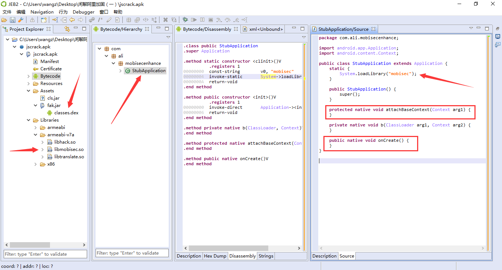
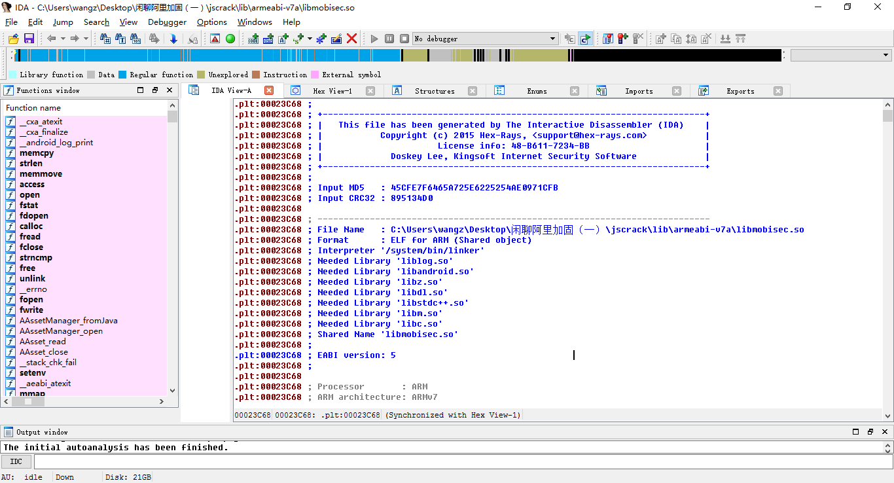
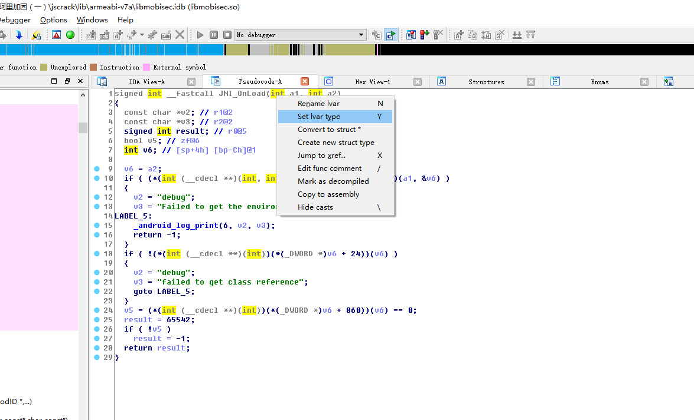
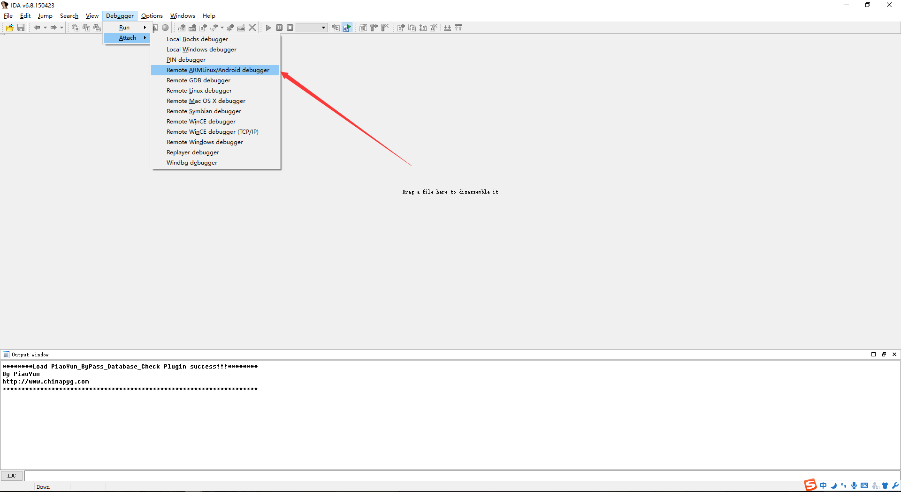
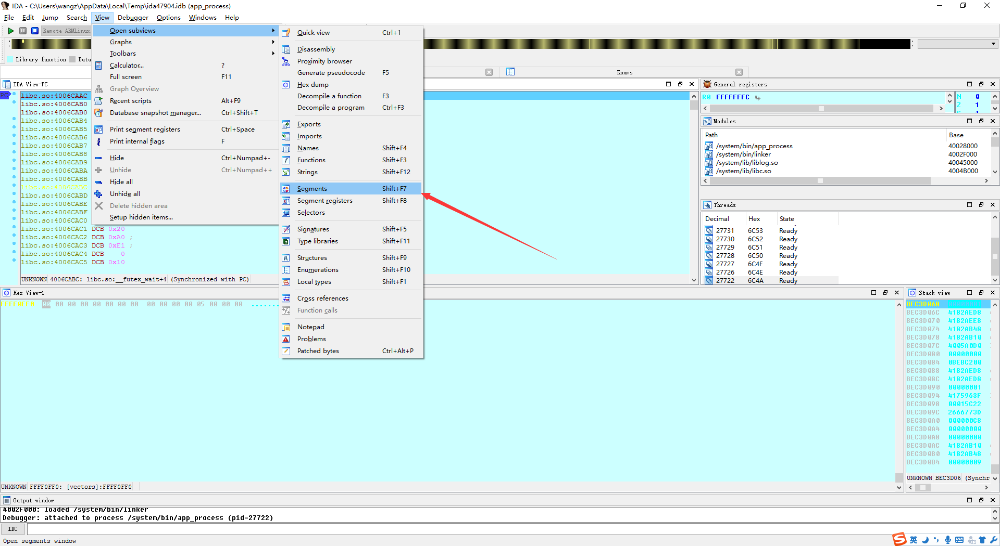
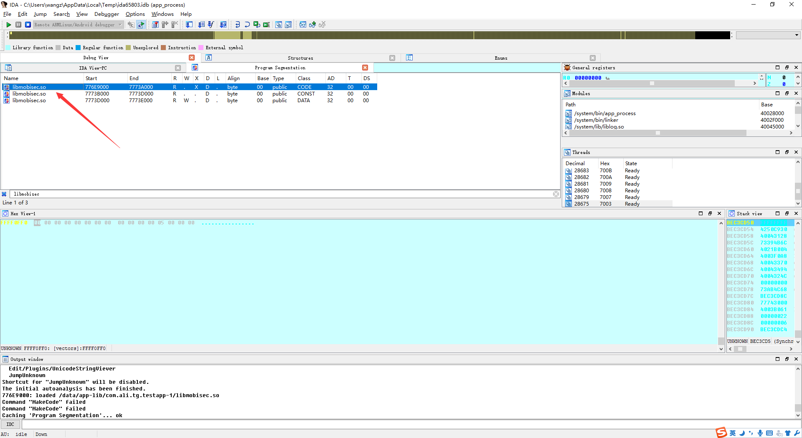
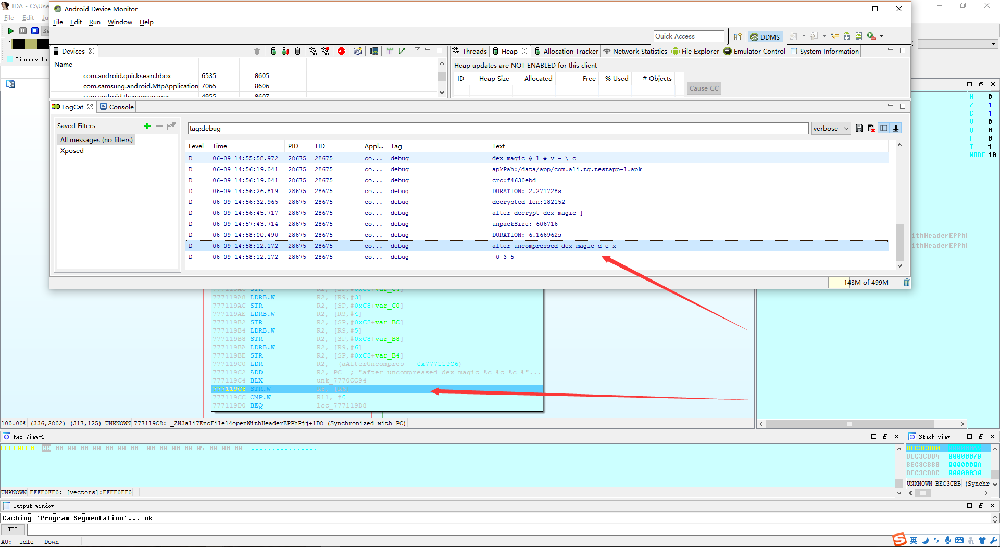
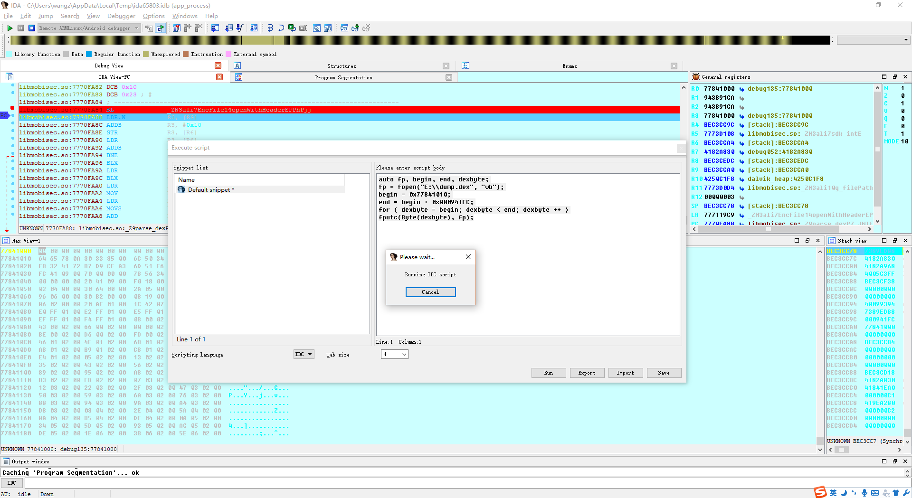
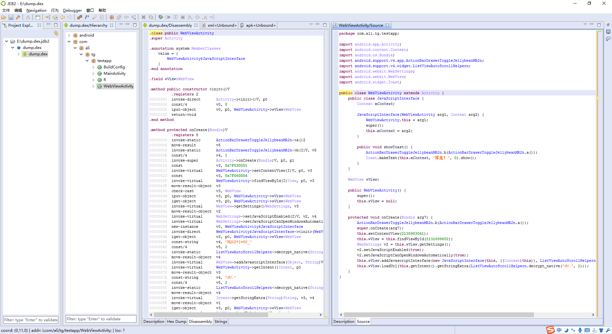

Author：wnagzihxain
Mail：tudouboom@163.com
Create Time：2016.11.11
1.为什么要写这些？
折腾了一段时间的Android加固，看了很多大牛的文章，收获还是蛮大的，不过好像大部分的文章都是直接写在哪里下断点如何修复之类的，写出如何找到这个脱壳点的文章还是比较少，所以我准备整理一下这部分的知识，讲讲如何找到脱壳点，希望能和大家多交流
2.需要什么样的基础？
用过JEB，IDA Pro，如果有跟着其它表哥自己脱过壳的那就更好了:），另外，既然都开始玩加固了，那么解压apk后的工程目录，smali语法等这种基础的东西就不再提了
3.为什么选择阿里加固？
因为我手上的加固样本有限，不是每个版本的加固样本都有，所以综合考虑了一下，选择阿里的样本，能比较容易形成一种循序渐进学习的感觉，样本全部来自历年阿里CTF和阿里移动安全挑战赛
4.适合对象？
最适合跟着其它表哥文章脱过壳，却不知道为什么要那样脱壳的同学，因为接下来这几篇文章讲的就是如何通过一步步的分析，找到脱壳点
这个样本是阿里14年出的，名字是jscrack.apk，我们来载入JEB了解大概信息

首先我们来看箭头指向的地方：
1.fak.jar：从名字来看，这是一个jar文件，但是JEB识别出来是一个dex，这个信息提供的很关键，我们可以猜想，阿里加固的方法会不会将源dex文件隐藏在这个fak.jar里面？
2.StupApplication：可以看到入口变成了StupApplication，有过Android开发经验的同学们都知道，一般情况下，我们在开发APP的时候，如果有全局变量，数据初始化之类的操作，会写一个StartApplication类继承Application类，那么显然这里是阿里加固自己添加的一个入口，用来执行一些初始化的操作，比如解密dex，反调试，检测模拟器等等之类的，当然这只是我们的猜测，不一定正确
3.mobisec.so：加载了一个so文件，这个so文件就是我们的切入点
然后来看两个红色框框，两个native方法：attachBaseContext()和onCreate()，一般情况下，入口应该是onCreate()，但是attachBaseContext()更早于onCreate()执行
刚刚我们通过JEB简单的分析了加固后的样本，发现关键信息就是libmoisec.so和两个native方法attachBaseContext()和onCreate()，那么我们现在就来分析一下libmobisec.so
使用IDA Pro载入libmobisec.so

加载起来还是很顺利的，并没有遇到"Binary Data is incorrect"之类的报错
在左边搜一下JNI_OnLoad，至于为什么搜这个？纯粹只是感觉，如果找不到就搜其它的嘛，一步一步来
运气不错，搜到了，双击进入，F5看伪代码，毕竟F5大法好
有一些结构没有识别出来，我们来导入JNI.h来手动修正一下
File -> Load file -> Parse C header file
导入成功后会出现"Compilation successful"的MessageBox，点击OK就行
然后切换到Structures界面，如果没有的话可以使用快捷键"Shift+F9"
菜单栏也可以打开
View -> Open subviews -> Structures
打开后我们按insert键，添加结构体，点击箭头那个按钮

分两次添加下面两个结构体

添加完后回到刚才F5反编译过后的窗口，放着先
我们来学习一下NDK开发中的一些概念知识，虽然大家搞的都是脱壳，但是不一定每个同学都搞过NDK开发，所以我们来补一补这部分的知识，如果已经很清楚的同学就当复习吧，这部分的知识相当重要，Very Important
JNI：Java Native Interface，类似一种标准，提供了很多的API，使Java可以和C/C++进行通信
NDK：Native Development Kit，这是一套工具或者说是一套组件，实现用C/C++来开发Android Application
这是一个简单的NDKDemo，也许这个Demo你觉得眼熟但是又好像不一样，没错就是你想到的那个，我稍微改了一下代码
public class HelloJni extends Activity{
@Override
public void onCreate(Bundle savedInstanceState){
super.onCreate(savedInstanceState);
TextView tv = new TextView(this);
tv.setText(stringFromJNI());
setContentView(tv);
}
public native String stringFromJNI();
static {
System.loadLibrary("hello-jni");
}
}
我们来实现一下native层的代码，在NDK开发中，有C和C++两种写法，显然它们在开发中是有差别的，那么结合这里的例子来看一下差别在哪里
#include <string.h>
#include <jni.h>
jstring Java_com_example_hellojni_HelloJni_stringFromJNI(JNIEnv* env, jobject thiz)
{
return (*env)->NewStringUTF(env, "Hello Castiel");
}
首先大概看一下代码，这是C语言写的，头文件的引入很好理解没有问题，然后是定义原生方法，来看原生方法的命名：
Java_com_example_hellojni_HelloJni_stringFromJNI
Java_：前缀
com_example_hellojni_HelloJni：完整的类路径
stringFromJNI：Java层中定义的方法名
完整的定义方式：
jstring Java_com_example_hellojni_HelloJni_stringFromJNI(JNIEnv* env, jobject thiz)
我们记得在Java层中，并没有传递参数进来，只是纯粹的调用了这个原生方法，但是这里有两个参数，好了，这里就是很重要的一处关于C和C++在NDK开发中不一样的地方，第一个参数是env，如果使用C开发，这里的env其实是一个二级指针，最终指向JNINativeInterface的结构，有疑惑对吧，来看JNI.h中对这个结构的定义
typedef const struct JNINativeInterface* JNIEnv;
所以结合上面的原生方法定义形式，相当于
const struct JNINativeInterface** env;
顺便补充看一下这个结构体的定义，方法非常多，后面省略了
struct JNINativeInterface {
void* reserved0;
void* reserved1;
void* reserved2;
void* reserved3;
jint (*GetVersion)(JNIEnv *);
jclass (*DefineClass)(JNIEnv*, const char*, jobject, const jbyte*,
jsize);
jclass (*FindClass)(JNIEnv*, const char*);
jmethodID (*FromReflectedMethod)(JNIEnv*, jobject);
jfieldID (*FromReflectedField)(JNIEnv*, jobject);
/* spec doesn't show jboolean parameter */
jobject (*ToReflectedMethod)(JNIEnv*, jclass, jmethodID, jboolean);
jclass (*GetSuperclass)(JNIEnv*, jclass);
jboolean (*IsAssignableFrom)(JNIEnv*, jclass, jclass);
......
};
如果使用C++来开发的话，同样，先来看定义
typedef _JNIEnv JNIEnv;
那么这时的env就是一个一级指针了，定义相当于
struct _JNIEnv* env;
在JNI.h中的定义，省略了一点
struct _JNIEnv {
/* do not rename this; it does not seem to be entirely opaque */
const struct JNINativeInterface* functions;
#if defined(__cplusplus)
jint GetVersion()
{ return functions->GetVersion(this); }
jclass DefineClass(const char *name, jobject loader, const jbyte* buf,
jsize bufLen)
{ return functions->DefineClass(this, name, loader, buf, bufLen); }
jclass FindClass(const char* name)
{ return functions->FindClass(this, name); }
......
#endif /*__cplusplus*/
};
那么在对比完两种语言开发下的env的差别后，大家对它应该是有一个大概的认识了，同时我们可以注意一下_JNIEnv结构体，里面有一句
const struct JNINativeInterface* functions;
再结合结构体里的代码可以看出来这个结构体里的方法实现也是通过functions指针对JNINativeInterface结构体里的方法进行调用，也就是说无论是C还是C++，最后都调用了JNINativeInterface结构体里的方法，如果不考虑详细调用形式的话，那么大概就是上面这个情况
再来对比一下具体的代码：
return (*env)->NewStringUTF(env, "Hello Castiel"); //C
return env->NewStringUTF("Hello Castiel"); //C++
第一个参数就讲到这里，然后来看第二个参数，在Java中，有实例方法和静态方法，两种都可以在Java层通过添加native关键字来声明
Java层：
public native String stringFromJNI(); //实例方法
public static native String stringFromJNI(); //静态方法
native层：
jstring Java_com_example_hellojni_HelloJni_stringFromJNI(JNIEnv* env, jobject thiz) //实例方法
jstring Java_com_example_hellojni_HelloJni_stringFromJNI(JNIEnv* env, jclass clazz) //静态方法
可以看出来实例方法和静态方法的第二个参数不一样，实例方法是jobject类型，而静态方法是jclass类型，是这样的，如果是实例方法，那么必然是通过获取实例进行引用，而静态方法则没有实例，只能通过类引用
回到开头，还记不记得我们说在调用stringFromJNI()的时候，并没有进行参数传递，但是在native里却有两个参数env和thiz这个问题，这个点非常重要，因为在IDA反编译so的时候，并不会识别的非常准确，需要我们去修复，靠的就是这些小Tips
接下来看数据类型，还是在JNI.h里面找的
还是很好理解的，简单看一下就好
#ifdef HAVE_INTTYPES_H
# include <inttypes.h> /* C99 */
typedef uint8_t jboolean; /* unsigned 8 bits */
typedef int8_t jbyte; /* signed 8 bits */
typedef uint16_t jchar; /* unsigned 16 bits */
typedef int16_t jshort; /* signed 16 bits */
typedef int32_t jint; /* signed 32 bits */
typedef int64_t jlong; /* signed 64 bits */
typedef float jfloat; /* 32-bit IEEE 754 */
typedef double jdouble; /* 64-bit IEEE 754 */
#else
typedef unsigned char jboolean; /* unsigned 8 bits */
typedef signed char jbyte; /* signed 8 bits */
typedef unsigned short jchar; /* unsigned 16 bits */
typedef short jshort; /* signed 16 bits */
typedef int jint; /* signed 32 bits */
typedef long long jlong; /* signed 64 bits */
typedef float jfloat; /* 32-bit IEEE 754 */
typedef double jdouble; /* 64-bit IEEE 754 */
#endif
然后是数组类型，区分了C和C++
#ifdef __cplusplus
/*
* Reference types, in C++
*/
class _jobject {};
class _jclass : public _jobject {};
class _jstring : public _jobject {};
class _jarray : public _jobject {};
class _jobjectArray : public _jarray {};
class _jbooleanArray : public _jarray {};
class _jbyteArray : public _jarray {};
class _jcharArray : public _jarray {};
class _jshortArray : public _jarray {};
class _jintArray : public _jarray {};
class _jlongArray : public _jarray {};
class _jfloatArray : public _jarray {};
class _jdoubleArray : public _jarray {};
class _jthrowable : public _jobject {};
typedef _jobject* jobject;
typedef _jclass* jclass;
typedef _jstring* jstring;
typedef _jarray* jarray;
typedef _jobjectArray* jobjectArray;
typedef _jbooleanArray* jbooleanArray;
typedef _jbyteArray* jbyteArray;
typedef _jcharArray* jcharArray;
typedef _jshortArray* jshortArray;
typedef _jintArray* jintArray;
typedef _jlongArray* jlongArray;
typedef _jfloatArray* jfloatArray;
typedef _jdoubleArray* jdoubleArray;
typedef _jthrowable* jthrowable;
typedef _jobject* jweak;
#else /* not __cplusplus */
/*
* Reference types, in C.
*/
typedef void* jobject;
typedef jobject jclass;
typedef jobject jstring;
typedef jobject jarray;
typedef jarray jobjectArray;
typedef jarray jbooleanArray;
typedef jarray jbyteArray;
typedef jarray jcharArray;
typedef jarray jshortArray;
typedef jarray jintArray;
typedef jarray jlongArray;
typedef jarray jfloatArray;
typedef jarray jdoubleArray;
typedef jobject jthrowable;
typedef jobject jweak;
#endif /* not __cplusplus */
既然讲了JNIEnv，那么不得不提一下JavaVM，因为这个在JNI.h中是和JNIEnv放在一起定义的
#if defined(__cplusplus)
typedef _JNIEnv JNIEnv;
typedef _JavaVM JavaVM;
#else
typedef const struct JNINativeInterface* JNIEnv;
typedef const struct JNIInvokeInterface* JavaVM;
#endif
这两个结构体代码比较短，放在一起来看
/*
* JNI invocation interface.
*/
struct JNIInvokeInterface {
void* reserved0;
void* reserved1;
void* reserved2;
jint (*DestroyJavaVM)(JavaVM*);
jint (*AttachCurrentThread)(JavaVM*, JNIEnv**, void*);
jint (*DetachCurrentThread)(JavaVM*);
jint (*GetEnv)(JavaVM*, void**, jint);
jint (*AttachCurrentThreadAsDaemon)(JavaVM*, JNIEnv**, void*);
};
/*
* C++ version.
*/
struct _JavaVM {
const struct JNIInvokeInterface* functions;
#if defined(__cplusplus)
jint DestroyJavaVM()
{ return functions->DestroyJavaVM(this); }
jint AttachCurrentThread(JNIEnv** p_env, void* thr_args)
{ return functions->AttachCurrentThread(this, p_env, thr_args); }
jint DetachCurrentThread()
{ return functions->DetachCurrentThread(this); }
jint GetEnv(void** env, jint version)
{ return functions->GetEnv(this, env, version); }
jint AttachCurrentThreadAsDaemon(JNIEnv** p_env, void* thr_args)
{ return functions->AttachCurrentThreadAsDaemon(this, p_env, thr_args); }
#endif /*__cplusplus*/
};
那么可以在代码里看到，如果是使用C++开发，一样是通过一个functions指针来实现对结构体JNIInvokeInterface里方法的调用
讲一下so的加载
当我们在加载so的时候，有两种加载方式，一个是直接load，还有一个是loadLibrary，看源码
/**
* Loads and links the dynamic library that is identified through the
* specified path. This method is similar to {@link #loadLibrary(String)},
* but it accepts a full path specification whereas {@code loadLibrary} just
* accepts the name of the library to load.
*
* @param pathName
* the path of the file to be loaded.
*/
public static void load(String pathName) {
Runtime.getRuntime().load(pathName, VMStack.getCallingClassLoader());
}
/**
* Loads and links the library with the specified name. The mapping of the
* specified library name to the full path for loading the library is
* implementation-dependent.
*
* @param libName
* the name of the library to load.
* @throws UnsatisfiedLinkError
* if the library could not be loaded.
*/
public static void loadLibrary(String libName) {
Runtime.getRuntime().loadLibrary(libName, VMStack.getCallingClassLoader());
}
可以看到无论是哪种方式，都会先获取ClassLoader，然后再调用相应的方法，那么明显的这里需要切到Runtime.java
/**
* Loads and links the library with the specified name. The mapping of the
* specified library name to the full path for loading the library is
* implementation-dependent.
*
* @param libName
* the name of the library to load.
* @throws UnsatisfiedLinkError
* if the library can not be loaded.
*/
public void loadLibrary(String libName) {
loadLibrary(libName, VMStack.getCallingClassLoader());
}
/*
* Searches for a library, then loads and links it without security checks.
*/
void loadLibrary(String libraryName, ClassLoader loader) {
if (loader != null) {
String filename = loader.findLibrary(libraryName);
if (filename == null) {
throw new UnsatisfiedLinkError("Couldn't load " + libraryName +
" from loader " + loader +
": findLibrary returned null");
}
String error = doLoad(filename, loader);
if (error != null) {
throw new UnsatisfiedLinkError(error);
}
return;
}
String filename = System.mapLibraryName(libraryName);
List<String> candidates = new ArrayList<String>();
String lastError = null;
for (String directory : mLibPaths) {
String candidate = directory + filename;
candidates.add(candidate);
if (IoUtils.canOpenReadOnly(candidate)) {
String error = doLoad(candidate, loader);
if (error == null) {
return; // We successfully loaded the library. Job done.
}
lastError = error;
}
}
if (lastError != null) {
throw new UnsatisfiedLinkError(lastError);
}
throw new UnsatisfiedLinkError("Library " + libraryName + " not found; tried " + candidates);
}
这里我们主要来分析一下loadLibrary()方法分支，load()方法的分支就在边上，有兴趣的同学翻一翻源码就可以看到了
当传进来的loader不为空，则会调用findLibrary()方法，然后执行doLoad()方法，如果loader为空，则会执行另一个流程，但是后面也会执行doLoad()方法
不过这里有个地方不是很好理解，关于findLibrary()方法，返回null？？？
protected String findLibrary(String libName) {
return null;
}
其实不是这样的，当运行程序的时候，真正ClassLoade的实现在PathClassLoader.java里，仅仅是做了一个继承而已，那么实现的代码想必是在BaseDexClassLoader.java里了
/*
* Copyright (C) 2007 The Android Open Source Project
*
* Licensed under the Apache License, Version 2.0 (the "License");
* you may not use this file except in compliance with the License.
* You may obtain a copy of the License at
*
* http://www.apache.org/licenses/LICENSE-2.0
*
* Unless required by applicable law or agreed to in writing, software
* distributed under the License is distributed on an "AS IS" BASIS,
* WITHOUT WARRANTIES OR CONDITIONS OF ANY KIND, either express or implied.
* See the License for the specific language governing permissions and
* limitations under the License.
*/
package dalvik.system;
/**
* Provides a simple {@link ClassLoader} implementation that operates on a list
* of files and directories in the local file system, but does not attempt to
* load classes from the network. Android uses this class for its system class
* loader and for its application class loader(s).
*/
public class PathClassLoader extends BaseDexClassLoader {
/**
* Creates a {@code PathClassLoader} that operates on a given list of files
* and directories. This method is equivalent to calling
* {@link #PathClassLoader(String, String, ClassLoader)} with a
* {@code null} value for the second argument (see description there).
*
* @param dexPath the list of jar/apk files containing classes and
* resources, delimited by {@code File.pathSeparator}, which
* defaults to {@code ":"} on Android
* @param parent the parent class loader
*/
public PathClassLoader(String dexPath, ClassLoader parent) {
super(dexPath, null, null, parent);
}
/**
* Creates a {@code PathClassLoader} that operates on two given
* lists of files and directories. The entries of the first list
* should be one of the following:
*
* <ul>
* <li>JAR/ZIP/APK files, possibly containing a "classes.dex" file as
* well as arbitrary resources.
* <li>Raw ".dex" files (not inside a zip file).
* </ul>
*
* The entries of the second list should be directories containing
* native library files.
*
* @param dexPath the list of jar/apk files containing classes and
* resources, delimited by {@code File.pathSeparator}, which
* defaults to {@code ":"} on Android
* @param libraryPath the list of directories containing native
* libraries, delimited by {@code File.pathSeparator}; may be
* {@code null}
* @param parent the parent class loader
*/
public PathClassLoader(String dexPath, String libraryPath,
ClassLoader parent) {
super(dexPath, null, libraryPath, parent);
}
}
findLibrary()方法在BaseDexClassLoader.java里的实现如下
@Override
public String findLibrary(String name) {
return pathList.findLibrary(name);
}
继续doLoad方法的代码，
private String doLoad(String name, ClassLoader loader) {
// Android apps are forked from the zygote, so they can't have a custom LD_LIBRARY_PATH,
// which means that by default an app's shared library directory isn't on LD_LIBRARY_PATH.
// The PathClassLoader set up by frameworks/base knows the appropriate path, so we can load
// libraries with no dependencies just fine, but an app that has multiple libraries that
// depend on each other needed to load them in most-dependent-first order.
// We added API to Android's dynamic linker so we can update the library path used for
// the currently-running process. We pull the desired path out of the ClassLoader here
// and pass it to nativeLoad so that it can call the private dynamic linker API.
// We didn't just change frameworks/base to update the LD_LIBRARY_PATH once at the
// beginning because multiple apks can run in the same process and third party code can
// use its own BaseDexClassLoader.
// We didn't just add a dlopen_with_custom_LD_LIBRARY_PATH call because we wanted any
// dlopen(3) calls made from a .so's JNI_OnLoad to work too.
// So, find out what the native library search path is for the ClassLoader in question...
String ldLibraryPath = null;
if (loader != null && loader instanceof BaseDexClassLoader) {
ldLibraryPath = ((BaseDexClassLoader) loader).getLdLibraryPath();
}
// nativeLoad should be synchronized so there's only one LD_LIBRARY_PATH in use regardless
// of how many ClassLoaders are in the system, but dalvik doesn't support synchronized
// internal natives.
synchronized (this) {
return nativeLoad(name, loader, ldLibraryPath);
}
}
ldLibraryPath获取这部分不是很重要，来看下面的nativeLoad()方法，这个方法的定义如下
// TODO: should be synchronized, but dalvik doesn't support synchronized internal natives.
private static native String nativeLoad(String filename, ClassLoader loader, String ldLibraryPath);
它是一个native方法，方法实现在java_lang_Runtime.cpp中
/*
* static String nativeLoad(String filename, ClassLoader loader, String ldLibraryPath)
*
* Load the specified full path as a dynamic library filled with
* JNI-compatible methods. Returns null on success, or a failure
* message on failure.
*/
static void Dalvik_java_lang_Runtime_nativeLoad(const u4* args,
JValue* pResult)
{
StringObject* fileNameObj = (StringObject*) args[0];
Object* classLoader = (Object*) args[1];
StringObject* ldLibraryPathObj = (StringObject*) args[2];
assert(fileNameObj != NULL);
char* fileName = dvmCreateCstrFromString(fileNameObj);
if (ldLibraryPathObj != NULL) {
char* ldLibraryPath = dvmCreateCstrFromString(ldLibraryPathObj);
void* sym = dlsym(RTLD_DEFAULT, "android_update_LD_LIBRARY_PATH");
if (sym != NULL) {
typedef void (*Fn)(const char*);
Fn android_update_LD_LIBRARY_PATH = reinterpret_cast<Fn>(sym);
(*android_update_LD_LIBRARY_PATH)(ldLibraryPath);
} else {
ALOGE("android_update_LD_LIBRARY_PATH not found; .so dependencies will not work!");
}
free(ldLibraryPath);
}
StringObject* result = NULL;
char* reason = NULL;
bool success = dvmLoadNativeCode(fileName, classLoader, &reason);
if (!success) {
const char* msg = (reason != NULL) ? reason : "unknown failure";
result = dvmCreateStringFromCstr(msg);
dvmReleaseTrackedAlloc((Object*) result, NULL);
}
free(reason);
free(fileName);
RETURN_PTR(result);
}
先获取一下传进来的参数，然后将Java的字符串转换为native层的字符串，接着ldLibraryPath和ldLibraryPathObj这个if代码块可以略过，对我们这部分的知识并不是很重要，如果有同学手里的Android源码是4.2或者更早的，可能和我这里不一样，你可能没有第三个参数，也就是没有这个if代码块
然后这一句比较关键
bool success = dvmLoadNativeCode(fileName, classLoader, &reason);
它的实现在Native.cpp
bool dvmLoadNativeCode(const char* pathName, Object* classLoader, char** detail)
{
SharedLib* pEntry;
void* handle;
bool verbose;
/* reduce noise by not chattering about system libraries */
verbose = !!strncmp(pathName, "/system", sizeof("/system")-1);
verbose = verbose && !!strncmp(pathName, "/vendor", sizeof("/vendor")-1);
if (verbose)
ALOGD("Trying to load lib %s %p", pathName, classLoader);
*detail = NULL;
pEntry = findSharedLibEntry(pathName);
if (pEntry != NULL) {
if (pEntry->classLoader != classLoader) {
ALOGW("Shared lib '%s' already opened by CL %p; can't open in %p", pathName, pEntry->classLoader, classLoader);
return false;
}
if (verbose) {
ALOGD("Shared lib '%s' already loaded in same CL %p", pathName, classLoader);
}
if (!checkOnLoadResult(pEntry))
return false;
return true;
}
Thread* self = dvmThreadSelf();
ThreadStatus oldStatus = dvmChangeStatus(self, THREAD_VMWAIT);
handle = dlopen(pathName, RTLD_LAZY);
dvmChangeStatus(self, oldStatus);
if (handle == NULL) {
*detail = strdup(dlerror());
ALOGE("dlopen(\"%s\") failed: %s", pathName, *detail);
return false;
}
/* create a new entry */
SharedLib* pNewEntry;
pNewEntry = (SharedLib*) calloc(1, sizeof(SharedLib));
pNewEntry->pathName = strdup(pathName);
pNewEntry->handle = handle;
pNewEntry->classLoader = classLoader;
dvmInitMutex(&pNewEntry->onLoadLock);
pthread_cond_init(&pNewEntry->onLoadCond, NULL);
pNewEntry->onLoadThreadId = self->threadId;
/* try to add it to the list */
SharedLib* pActualEntry = addSharedLibEntry(pNewEntry);
if (pNewEntry != pActualEntry) {
ALOGI("WOW: we lost a race to add a shared lib (%s CL=%p)", pathName, classLoader);
freeSharedLibEntry(pNewEntry);
return checkOnLoadResult(pActualEntry);
} else {
if (verbose)
ALOGD("Added shared lib %s %p", pathName, classLoader);
bool result = false;
void* vonLoad;
int version;
vonLoad = dlsym(handle, "JNI_OnLoad");
if (vonLoad == NULL) {
ALOGD("No JNI_OnLoad found in %s %p, skipping init", pathName, classLoader);
result = true;
} else {
OnLoadFunc func = (OnLoadFunc)vonLoad;
Object* prevOverride = self->classLoaderOverride;
self->classLoaderOverride = classLoader;
oldStatus = dvmChangeStatus(self, THREAD_NATIVE);
if (gDvm.verboseJni) {
ALOGI("[Calling JNI_OnLoad for \"%s\"]", pathName);
}
version = (*func)(gDvmJni.jniVm, NULL);
dvmChangeStatus(self, oldStatus);
self->classLoaderOverride = prevOverride;
if (version == JNI_ERR) {
*detail = strdup(StringPrintf("JNI_ERR returned from JNI_OnLoad in \"%s\"", pathName).c_str());
} else if (dvmIsBadJniVersion(version)) {
*detail = strdup(StringPrintf("Bad JNI version returned from JNI_OnLoad in \"%s\": %d",
pathName, version).c_str());
} else {
result = true;
}
if (gDvm.verboseJni) {
ALOGI("[Returned %s from JNI_OnLoad for \"%s\"]", (result ? "successfully" : "failure"), pathName);
}
}
if (result)
pNewEntry->onLoadResult = kOnLoadOkay;
else
pNewEntry->onLoadResult = kOnLoadFailed;
pNewEntry->onLoadThreadId = 0;
dvmLockMutex(&pNewEntry->onLoadLock);
pthread_cond_broadcast(&pNewEntry->onLoadCond);
dvmUnlockMutex(&pNewEntry->onLoadLock);
return result;
}
}
看着有点复杂，详细的来解释一下，一段一段来看
先通过findSharedLibEntry()方法查找内存中所要加载的so的信息，如果曾经加载过，就返回一个指针，指向这个so在内存的信息，指针保存为pEntry，如果这个指针不为空，表示确实是加载过，那么就会判断当前传进来的classloader和在内存中保存的so的classloader是不是一样：如果不一样，则返回失败；如果一样，则返回已加载，然后还有一个小判断checkOnLoadResult()方法，不多讲了
/*
* See if we've already loaded it. If we have, and the class loader
* matches, return successfully without doing anything.
*/
pEntry = findSharedLibEntry(pathName);
if (pEntry != NULL) {
if (pEntry->classLoader != classLoader) {
ALOGW("Shared lib '%s' already opened by CL %p; can't open in %p", pathName, pEntry->classLoader, classLoader);
return false;
}
if (verbose) {
ALOGD("Shared lib '%s' already loaded in same CL %p", pathName, classLoader);
}
if (!checkOnLoadResult(pEntry))
return false;
return true;
}
上面是在内存中存在所要加载的so的情况，在我们现在讨论的情况下，它是没有被加载过的，也就是下面的分支才是我们要重点关注的
使用dlopen()打开一个库，这个方法有两个参数，一个是pathName，还有一个是mode，这里的mode是RTLD_LAZY，还有好几种其它的mode，比如RTLD_NOW，主要是用于要不要立刻处理该库里的符号，然后返回一个句柄handle，如果handle为空则返回失败
Thread* self = dvmThreadSelf();
ThreadStatus oldStatus = dvmChangeStatus(self, THREAD_VMWAIT);
handle = dlopen(pathName, RTLD_LAZY);
dvmChangeStatus(self, oldStatus);
if (handle == NULL) {
*detail = strdup(dlerror());
ALOGE("dlopen(\"%s\") failed: %s", pathName, *detail);
return false;
}
如果正常获取到了handle，就创建一个新的pNewEntry来描述改so的信息，这和我们最开始那个判断内存中是否已加载目标so的pEntry是一个意思
/* create a new entry */
SharedLib* pNewEntry;
pNewEntry = (SharedLib*) calloc(1, sizeof(SharedLib));
pNewEntry->pathName = strdup(pathName);
pNewEntry->handle = handle;
pNewEntry->classLoader = classLoader;
dvmInitMutex(&pNewEntry->onLoadLock);
pthread_cond_init(&pNewEntry->onLoadCond, NULL);
pNewEntry->onLoadThreadId = self->threadId;
使用addSharedLibEntry()方法添加该pNewEntry的信息，返回一个pActualEntry
/* try to add it to the list */
SharedLib* pActualEntry = addSharedLibEntry(pNewEntry);
如果pNewEntry和pActualEntry不一样，什么意思呢？
因为是这样的，当执行addSharedLibEntry()方法的时候，如果还有一个线程B同时在加载该so，并且B线程先执行到了这里，那么就说明该so的信息已经添加过了，我们就不需要再执行添加pNewEntry的操作
if (pNewEntry != pActualEntry) {
ALOGI("WOW: we lost a race to add a shared lib (%s CL=%p)", pathName, classLoader);
freeSharedLibEntry(pNewEntry);
return checkOnLoadResult(pActualEntry);
}
如果成功添加pNewEntry的信息，则执行下面的代码
else {
if (verbose)
ALOGD("Added shared lib %s %p", pathName, classLoader);
bool result = false;
void* vonLoad;
int version;
vonLoad = dlsym(handle, "JNI_OnLoad");
if (vonLoad == NULL) {
ALOGD("No JNI_OnLoad found in %s %p, skipping init", pathName, classLoader);
result = true;
} else {
/*
* Call JNI_OnLoad. We have to override the current class
* loader, which will always be "null" since the stuff at the
* top of the stack is around Runtime.loadLibrary(). (See
* the comments in the JNI FindClass function.)
*/
OnLoadFunc func = (OnLoadFunc)vonLoad;
Object* prevOverride = self->classLoaderOverride;
self->classLoaderOverride = classLoader;
oldStatus = dvmChangeStatus(self, THREAD_NATIVE);
if (gDvm.verboseJni) {
ALOGI("[Calling JNI_OnLoad for \"%s\"]", pathName);
}
version = (*func)(gDvmJni.jniVm, NULL);
dvmChangeStatus(self, oldStatus);
self->classLoaderOverride = prevOverride;
if (version == JNI_ERR) {
*detail = strdup(StringPrintf("JNI_ERR returned from JNI_OnLoad in \"%s\"",
pathName).c_str());
} else if (dvmIsBadJniVersion(version)) {
*detail = strdup(StringPrintf("Bad JNI version returned from JNI_OnLoad in \"%s\": %d",
pathName, version).c_str());
/*
* It's unwise to call dlclose() here, but we can mark it
* as bad and ensure that future load attempts will fail.
*
* We don't know how far JNI_OnLoad got, so there could
* be some partially-initialized stuff accessible through
* newly-registered native method calls. We could try to
* unregister them, but that doesn't seem worthwhile.
*/
} else {
result = true;
}
if (gDvm.verboseJni) {
ALOGI("[Returned %s from JNI_OnLoad for \"%s\"]",
(result ? "successfully" : "failure"), pathName);
}
}
if (result)
pNewEntry->onLoadResult = kOnLoadOkay;
else
pNewEntry->onLoadResult = kOnLoadFailed;
pNewEntry->onLoadThreadId = 0;
/*
* Broadcast a wakeup to anybody sleeping on the condition variable.
*/
dvmLockMutex(&pNewEntry->onLoadLock);
pthread_cond_broadcast(&pNewEntry->onLoadCond);
dvmUnlockMutex(&pNewEntry->onLoadLock);
return result;
}
刚刚我们使用dlopen()方法打开so，然后返回了一个handle句柄，这个句柄在接下来的作用就是定位JNI_OnLoad()方法，还记得最开始我们用IDA载入libmobisec.so时搜了JNI_OnLoad()方法吗？
如果这个地址返回值为空说明没有JNI_OnLoad()方法
vonLoad = dlsym(handle, "JNI_OnLoad");
if (vonLoad == NULL) {
ALOGD("No JNI_OnLoad found in %s %p, skipping init", pathName, classLoader);
result = true;
}
如果JNI_OnLoad()方法的地址获取正常，就将它保存在func中
OnLoadFunc func = (OnLoadFunc)vonLoad;
然后就是执行JNI_OnLoad()方法了，返回值赋值给version
version = (*func)(gDvmJni.jniVm, NULL);
那么为什么要单独挑出JNI_OnLoad()方法来执行呢？它有什么特殊吗？它的作用是什么？
这里就要讲讲在NDK开发中静态注册和动态注册了
静态注册就像我们最开始讲的那个NDKDemo，先在Java层执行loadLibrary()方法，然后声明一下native，然后在native层用完整类路径等一系列的标志组成一个方法名，直接在Java层进行调用即可
动态注册同样需要先在Java层执行loadLibrary()方法，并且声明native，简单的Demo如下
JNIEXPORT jstring JNICALL native_hello(JNIEnv *env, jclass clazz)
{
printf("hello in c native code./n");
return (*env)->NewStringUTF(env, "hello world returned.");
}
#define JNIREG_CLASS "com/jni/JavaHello"
/**
* Table of methods associated with a single class.
*/
static JNINativeMethod gMethods[] = {
{ "hello", "()Ljava/lang/String;", (void*)native_hello },
};
/*
* Register several native methods for one class.
*/
static int registerNativeMethods(JNIEnv* env, const char* className,
JNINativeMethod* gMethods, int numMethods)
{
jclass clazz;
clazz = (*env)->FindClass(env, className);
if (clazz == NULL) {
return JNI_FALSE;
}
if ((*env)->RegisterNatives(env, clazz, gMethods, numMethods) < 0) {
return JNI_FALSE;
}
return JNI_TRUE;
}
/*
* Register native methods for all classes we know about.
*/
static int registerNatives(JNIEnv* env)
{
if (!registerNativeMethods(env, JNIREG_CLASS, gMethods, sizeof(gMethods) / sizeof(gMethods[0])))
return JNI_FALSE;
return JNI_TRUE;
}
/*
* Set some test stuff up.
*
* Returns the JNI version on success, -1 on failure.
*/
JNIEXPORT jint JNICALL JNI_OnLoad(JavaVM* vm, void* reserved)
{
JNIEnv* env = NULL;
jint result = -1;
if ((*vm)->GetEnv(vm, (void**) &env, JNI_VERSION_1_4) != JNI_OK) {
return -1;
}
assert(env != NULL);
if (!registerNatives(env)) {
return -1;
}
/* success -- return valid version number */
result = JNI_VERSION_1_4;
return result;
}
JNI_OnLoad()方法有两个参数，一个是JavaVM，另一个是保留参数，可为空，这个vm就是程序当前使用的Dalvik虚拟机实例，vm是进程级别，而env属于线程级别，虽然不是很准确，但是确实是这个意思
获取env
if ((*vm)->GetEnv(vm, (void**) &env, JNI_VERSION_1_4) != JNI_OK) {
return -1;
}
注册native方法
if (!registerNatives(env)) {
return -1;
}
registerNatives()方法的实现，调用了另一个方法registerNativeMethods()来实现注册
/*
* Register native methods for all classes we know about.
*/
static int registerNatives(JNIEnv* env)
{
if (!registerNativeMethods(env, JNIREG_CLASS, gMethods, sizeof(gMethods) / sizeof(gMethods[0])))
return JNI_FALSE;
return JNI_TRUE;
}
registerNativeMethods()方法有四个参数，第一个是env，第二个是要注册的类，第三个是要注册的方法表，第四个是方法数量
/*
* Register several native methods for one class.
*/
static int registerNativeMethods(JNIEnv* env, const char* className,
JNINativeMethod* gMethods, int numMethods)
{
jclass clazz;
clazz = (*env)->FindClass(env, className);
if (clazz == NULL) {
return JNI_FALSE;
}
if ((*env)->RegisterNatives(env, clazz, gMethods, numMethods) < 0) {
return JNI_FALSE;
}
return JNI_TRUE;
}
要注册的类
#define JNIREG_CLASS "com/jni/JavaHello"
要注册的方法表
/**
* Table of methods associated with a single class.
*/
static JNINativeMethod gMethods[] = {
{ "hello", "()Ljava/lang/String;", (void*)native_hello },
};
注册完后，当我们调用Java层的hello()的时候，就会调用native层的native_hello()方法
JNIEXPORT jstring JNICALL native_hello(JNIEnv *env, jclass clazz)
{
printf("hello in c native code./n");
return (*env)->NewStringUTF(env, "hello world returned.");
}
现在明白为什么要先搜一下JNI_OnLoad()方法了吗？
.init section和.init_array section下次再讲
那么DNK开发的知识就讲到这里，我们回到刚才放在一边的IDA
现在看JNI_OnLoad()方法是不是很熟悉或者说很有感觉了呢？
刚刚我们已经知道JNI_OnLoad()方法第一个参数是JavaVM*类型，这里没有识别正确，我们来修正一下参数类型，在第一个参数的int上面右击，点击Set lvar type，下次直接用Y快捷键

输入JavaVM*

然后重命名一下参数a1为vm，重命名可以右键，也可以快捷键N
可以看到GetEnv函数已经识别出来了
signed int __fastcall JNI_OnLoad(JavaVM *vm, int a2)
{
const char *v2; // r1@2
const char *v3; // r2@2
signed int result; // r0@5
bool v5; // zf@6
int v6; // [sp+4h] [bp-Ch]@1
v6 = a2;
if ( ((int (__cdecl *)(JavaVM *, int *))(*vm)->GetEnv)(vm, &v6) )
{
v2 = "debug";
v3 = "Failed to get the environment";
LABEL_5:
_android_log_print(6, v2, v3);
return -1;
}
if ( !(*(int (__cdecl **)(int))(*(_DWORD *)v6 + 24))(v6) )
{
v2 = "debug";
v3 = "failed to get class reference";
goto LABEL_5;
}
v5 = (*(int (__cdecl **)(int))(*(_DWORD *)v6 + 860))(v6) == 0;
result = 65542;
if ( !v5 )
result = -1;
return result;
}
在GetEnv()方法上面右击，点击Force call type

那么现在就比较清楚了，GetEnv()方法一共三个参数，第一个是vm，第二个是env，第三个是JNIVERSION*，第三个参数不必在意
JNIEnv* env = NULL;
jint result = -1;
if ((*vm)->GetEnv(vm, (void**) &env, JNI_VERSION_1_4) != JNI_OK) {
return -1;
}
IDA中反编译出来的代码
if ( (*vm)->GetEnv(vm, (void **)&v6, 65542) )
{
v2 = "debug";
v3 = "Failed to get the environment";
LABEL_5:
_android_log_print(6, v2, v3);
return -1;
}
知道了第二个参数是env，重命名一下，顺便修改类型为JNIEnv*
这一下看起来好看多了，该有的函数都已经识别出来
signed int __fastcall JNI_OnLoad(JavaVM *vm, int a2)
{
const char *v2; // r1@2
const char *v3; // r2@2
signed int result; // r0@5
bool v5; // zf@6
JNIEnv *env; // [sp+4h] [bp-Ch]@1
env = (JNIEnv *)a2;
if ( (*vm)->GetEnv(vm, (void **)&env, 65542) )
{
v2 = "debug";
v3 = "Failed to get the environment";
LABEL_5:
_android_log_print(6, v2, v3);
return -1;
}
if ( !((int (__cdecl *)(JNIEnv *))(*env)->FindClass)(env) )
{
v2 = "debug";
v3 = "failed to get class reference";
goto LABEL_5;
}
v5 = ((int (__cdecl *)(JNIEnv *))(*env)->RegisterNatives)(env) == 0;
result = 65542;
if ( !v5 )
result = -1;
return result;
}
下面两个(*env)->的函数也需要Force call type，就是下面这个样子，首先执行FindClass()方法，然后执行RegisterNatives()动态注册native方法，可以看到最后那个参数是2，代表什么还记得吗？它表示要注册的native方法数量
signed int __fastcall JNI_OnLoad(JavaVM *vm, int a2)
{
const char *v2; // r1@2
const char *v3; // r2@2
jclass v4; // r1@3
signed int result; // r0@5
bool v6; // zf@6
JNIEnv *env; // [sp+4h] [bp-Ch]@1
env = (JNIEnv *)a2;
if ( (*vm)->GetEnv(vm, (void **)&env, 65542) )
{
v2 = "debug";
v3 = "Failed to get the environment";
LABEL_5:
_android_log_print(6, v2, v3);
return -1;
}
v4 = (*env)->FindClass(env, "com/ali/mobisecenhance/StubApplication");
if ( !v4 )
{
v2 = "debug";
v3 = "failed to get class reference";
goto LABEL_5;
}
v6 = (*env)->RegisterNatives(env, v4, (const JNINativeMethod *)off_54010, 2) == 0;
result = 65542;
if ( !v6 )
result = -1;
return result;
}
第三个参数是gMethods，我们修改一下变量名
来看它的结构体定义
typedef struct {
constchar*name;
constchar* signature;
void* fnPtr;
} JNINativeMethod;
然后跳过去看看数据，从结构体定义可以看出来，它是三个数据为一组
第一个是Java层的方法名，第二个是签名，第三个就是一个指针了，也就是native方法的地址
.data:00054010 gMethods DCD aAttachbasecont ; DATA XREF: JNI_OnLoad+44
.data:00054010 ; .text:off_24784
.data:00054010 ; "attachBaseContext"
.data:00054014 DCD aLandroidCont_1 ; "(Landroid/content/Context;)V"
.data:00054018 DCD sub_24D3C+1
.data:0005401C DCD aOncreate ; "onCreate"
.data:00054020 DCD aV ; "()V"
.data:00054024 DCD sub_24498+1
那么可以看出来，一共注册了两个方法，一个是attachBaseContext()方法，另一个是onCreate()方法，这两个方法刚好就对应我们在JEB里看到的那两个native方法，对着Java层的名字修改一下方法名
然后跟入attachBaseContext()方法来分析一下代码
int __fastcall attachBaseContext(ali *a1, int a2, int a3)
{
int v3; // r8@1
int v4; // r10@1
ali *v5; // r4@1
_JNIEnv *v6; // r1@1
int result; // r0@1
ali *v8; // r0@2
int v9; // r0@2
int v10; // r0@2
int v11; // r3@2
int v12; // r0@2
int v13; // r5@2
int v14; // r0@2
int v15; // r0@2
int v16; // r3@2
int v17; // r0@2
int v18; // r0@4
int v19; // r0@5
char *v20; // r0@9
int v21; // r0@6
int v22; // r3@13
int v23; // r0@13
int v24; // r3@15
int v25; // r0@15
int v26; // r3@15
int v27; // r8@15
const char *v28; // r0@16
const char *v29; // r5@16
size_t v30; // r0@16
int v31; // r5@17
int v32; // r8@17
int v33; // r0@17
int v34; // r0@17
int v35; // r5@17
const char *v36; // r1@18
const char *v37; // r2@18
int v38; // r0@19
ali *v39; // r0@20
int v40; // r4@22
unsigned __int64 v41; // r2@22
int v42; // [sp+8h] [bp-78h]@2
__int64 v43; // [sp+18h] [bp-68h]@17
char v44; // [sp+24h] [bp-5Ch]@6
char v45; // [sp+3Ch] [bp-44h]@2
char *v46; // [sp+4Ch] [bp-34h]@3
char *v47; // [sp+50h] [bp-30h]@3
int v48; // [sp+54h] [bp-2Ch]@1
v3 = a2;
v4 = a3;
v5 = a1;
v48 = _stack_chk_guard;
((void (__fastcall *)(signed int, const char *, const char *))_android_log_print)(6, "debug", "in...");
result = ali::init_classes(v5, v6);
if ( !result )
{
v8 = (ali *)_JNIEnv::CallNonvirtualVoidMethod(v5, v3, ali::ContextWrapper, unk_54128);
v42 = ali::NanoTime(v8);
v9 = _JNIEnv::GetObjectClass(v5, v3);
v10 = _JNIEnv::GetMethodID(v5, v9, "getFilesDir", "()Ljava/io/File;");
v12 = _JNIEnv::CallObjectMethod(v5, v3, v10, v11);
v13 = v12;
v14 = _JNIEnv::GetObjectClass(v5, v12);
v15 = _JNIEnv::GetMethodID(v5, v14, "getAbsolutePath", "()Ljava/lang/String;");
v17 = _JNIEnv::CallObjectMethod(v5, v13, v15, v16);
sub_247D8(&v45, v5, v17);
if ( (_UNKNOWN *)&v45 != &ali::g_filePath )
std::string::_M_assign((std::string *)&ali::g_filePath, v47, v46);
std::priv::_String_base<char,std::allocator<char>>::_M_deallocate_block(&v45);
_android_log_print(3, "debug", "global files path is %s");
v18 = _JNIEnv::CallObjectMethod(v5, v3, unk_541A4, 0xFFFFFC78);
if ( ali::sdk_int <= 8 )
{
v21 = _JNIEnv::GetObjectField(v5, v18, unk_5416C);
sub_247D8(&v44, v5, v21);
std::operator+<char,std::char_traits<char>,std::allocator<char>>(&v45, &v44, "/lib");
if ( (_UNKNOWN *)&v45 != &ali::g_libPath )
std::string::_M_assign((std::string *)&ali::g_libPath, v47, v46);
std::priv::_String_base<char,std::allocator<char>>::_M_deallocate_block(&v45);
v20 = &v44;
}
else
{
v19 = _JNIEnv::GetObjectField(v5, v18, unk_54170);
sub_247D8(&v45, v5, v19);
if ( (_UNKNOWN *)&v45 != &ali::g_libPath )
std::string::_M_assign((std::string *)&ali::g_libPath, v47, v46);
v20 = &v45;
}
std::priv::_String_base<char,std::allocator<char>>::_M_deallocate_block(v20);
_android_log_print(3, "debug", "global native path is %s", unk_540D0, v4);
v23 = _JNIEnv::CallObjectMethod(v5, v3, unk_541B0, v22);
sub_247D8(&v45, v5, v23);
if ( (_UNKNOWN *)&v45 != &ali::g_apkPath )
std::string::_M_assign((std::string *)&ali::g_apkPath, v47, v46);
std::priv::_String_base<char,std::allocator<char>>::_M_deallocate_block(&v45);
setenv("APKPATH", dword_540B8, 1);
_android_log_print(3, "debug", "global apk path is %s", dword_540B8);
sub_24A64(v5, v3);
v25 = _JNIEnv::CallObjectMethod(v5, v4, unk_541A0, v24);
v27 = v25;
if ( v25 )
{
v28 = (const char *)(*(int (__fastcall **)(ali *, int, _DWORD))(*(_DWORD *)v5 + 676))(v5, v25, 0);
v29 = v28;
v30 = strlen(v28);
std::string::_M_assign((std::string *)&ali::g_pkgName, v29, &v29[v30]);
(*(void (__fastcall **)(ali *, int, const char *))(*(_DWORD *)v5 + 680))(v5, v27, v29);
}
v43 = 0LL;
v31 = _JNIEnv::CallObjectMethod(v5, v4, unk_541A8, v26);
parse_dex((_JNIEnv *)v5, &v43);
replace_classloader_cookie(v5, v31, v43, HIDWORD(v43));
_android_log_print(3, "debug", "enter new application");
v32 = unk_54120;
v33 = _JNIEnv::NewStringUTF((_JNIEnv *)v5, "android.app.Application");
v34 = _JNIEnv::CallObjectMethod(v5, v31, v32, v33);
v35 = v34;
if ( v34 )
{
v38 = _JNIEnv::GetMethodID(v5, v34, "<init>", "()V");
dword_540A0 = _JNIEnv::NewObject(v5, v35, v38);
_JNIEnv::CallVoidMethod(v5, dword_540A0, unk_54134);
_JNIEnv::DeleteLocalRef(v5, v35);
v36 = "debug";
v37 = "exit new application";
}
else
{
v36 = "debug";
v37 = "can't findClass realAppClass";
}
v39 = (ali *)_android_log_print(3, v36, v37);
if ( dword_540A0 )
{
v39 = (ali *)(*(int (__fastcall **)(ali *))(*(_DWORD *)v5 + 84))(v5);
dword_540A0 = (int)v39;
}
v40 = ali::NanoTime(v39);
_android_log_print(3, "debug", "##### attachBaseContext spent:");
ali::PrettyDuration((ali *)(v40 - v42), v41);
result = _android_log_print(3, "debug", "exit attachBaseContext");
}
if ( v48 != _stack_chk_guard )
_stack_chk_fail(result);
return result;
}
结合前面我们说的修正类型，修改变量名什么的，先来搞一波
int __fastcall attachBaseContext(JNIEnv *a1, jobject *a2, jobject *a3)
{
jobject *jobj; // r8@1
jobject *context; // r10@1
JNIEnv *env; // r4@1
_JNIEnv *v6; // r1@1
int v7; // r2@1
int result; // r0@1
JNIEnv *v9; // r0@2
int v10; // r1@2
int v11; // r2@2
int v12; // r0@2
int v13; // r3@2
int v14; // r5@2
int v15; // r0@2
int v16; // r3@2
int v17; // r0@2
int v18; // r0@5
char *v19; // r0@9
int v20; // r0@6
int v21; // r3@13
int v22; // r0@13
int v23; // r3@15
void *v24; // r0@15
int v25; // r3@15
void *v26; // r8@15
const char *v27; // r0@16
const char *v28; // r5@16
size_t v29; // r0@16
int v30; // r5@17
int v31; // r8@17
int v32; // r0@17
int v33; // r5@17
const char *v34; // r1@18
const char *v35; // r2@18
int v36; // r0@19
JNIEnv *v37; // r0@20
int v38; // r2@20
int v39; // r1@20
int v40; // r4@22
unsigned __int64 v41; // r2@22
int v42; // [sp+8h] [bp-78h]@2
__int64 v43; // [sp+18h] [bp-68h]@17
char v44; // [sp+24h] [bp-5Ch]@6
char v45; // [sp+3Ch] [bp-44h]@2
char *v46; // [sp+4Ch] [bp-34h]@3
char *v47; // [sp+50h] [bp-30h]@3
int v48; // [sp+54h] [bp-2Ch]@1
jobj = a2;
context = a3;
env = a1;
v48 = _stack_chk_guard;
_android_log_print(6, "debug", "in...");
result = ali::init_classes((ali *)env, v6, v7);
if ( !result )
{
v9 = (JNIEnv *)_JNIEnv::CallNonvirtualVoidMethod(env, (int)jobj, ali::ContextWrapper, unk_54128);
v42 = ali::NanoTime(v9, v10, v11);
_JNIEnv::GetObjectClass(env);
v12 = _JNIEnv::GetMethodID(env);
v14 = _JNIEnv::CallObjectMethod(env, (int)jobj, v12, v13);
_JNIEnv::GetObjectClass(env);
v15 = _JNIEnv::GetMethodID(env);
v17 = _JNIEnv::CallObjectMethod(env, v14, v15, v16);
sub_247D8(&v45, env, v17);
if ( (_UNKNOWN *)&v45 != &ali::g_filePath )
std::string::_M_assign((std::string *)&ali::g_filePath, v47, v46);
std::priv::_String_base<char,std::allocator<char>>::_M_deallocate_block(&v45);
_android_log_print(3, "debug", "global files path is %s", unk_540E8, context);
_JNIEnv::CallObjectMethod(env, (int)jobj, unk_541A4, -904);
if ( ali::sdk_int <= 8 )
{
v20 = _JNIEnv::GetObjectField(env);
sub_247D8(&v44, env, v20);
std::operator+<char,std::char_traits<char>,std::allocator<char>>(&v45, &v44, "/lib");
if ( (_UNKNOWN *)&v45 != &ali::g_libPath )
std::string::_M_assign((std::string *)&ali::g_libPath, v47, v46);
std::priv::_String_base<char,std::allocator<char>>::_M_deallocate_block(&v45);
v19 = &v44;
}
else
{
v18 = _JNIEnv::GetObjectField(env);
sub_247D8(&v45, env, v18);
if ( (_UNKNOWN *)&v45 != &ali::g_libPath )
std::string::_M_assign((std::string *)&ali::g_libPath, v47, v46);
v19 = &v45;
}
std::priv::_String_base<char,std::allocator<char>>::_M_deallocate_block(v19);
_android_log_print(3, "debug", "global native path is %s", unk_540D0);
v22 = _JNIEnv::CallObjectMethod(env, (int)jobj, unk_541B0, v21);
sub_247D8(&v45, env, v22);
if ( (_UNKNOWN *)&v45 != &ali::g_apkPath )
std::string::_M_assign((std::string *)&ali::g_apkPath, v47, v46);
std::priv::_String_base<char,std::allocator<char>>::_M_deallocate_block(&v45);
setenv("APKPATH", dword_540B8, 1);
_android_log_print(3, "debug", "global apk path is %s", dword_540B8);
sub_24A64(env, jobj);
v24 = (void *)_JNIEnv::CallObjectMethod(env, (int)context, unk_541A0, v23);
v26 = v24;
if ( v24 )
{
v27 = (*env)->GetStringUTFChars(env, v24, 0);
v28 = v27;
v29 = strlen(v27);
std::string::_M_assign((std::string *)&ali::g_pkgName, v28, &v28[v29]);
(*env)->ReleaseStringUTFChars(env, v26, v28);
}
v43 = 0LL;
v30 = _JNIEnv::CallObjectMethod(env, (int)context, unk_541A8, v25);
parse_dex((_JNIEnv *)env, &v43);
replace_classloader_cookie(env, v30, v43, HIDWORD(v43));
_android_log_print(3, "debug", "enter new application");
v31 = unk_54120;
v32 = _JNIEnv::NewStringUTF((_JNIEnv *)env, "android.app.Application");
v33 = _JNIEnv::CallObjectMethod(env, v30, v31, v32);
if ( v33 )
{
v36 = _JNIEnv::GetMethodID(env);
dword_540A0 = _JNIEnv::NewObject(env, v33, v36);
_JNIEnv::CallVoidMethod(env, dword_540A0, unk_54134);
_JNIEnv::DeleteLocalRef(env, v33);
v34 = "debug";
v35 = "exit new application";
}
else
{
v34 = "debug";
v35 = "can't findClass realAppClass";
}
v37 = (JNIEnv *)_android_log_print(3, v34, v35);
v39 = dword_540A0;
if ( dword_540A0 )
{
v37 = (JNIEnv *)(*env)->NewGlobalRef(env, (jobject)dword_540A0);
dword_540A0 = (int)v37;
}
v40 = ali::NanoTime(v37, v39, v38);
_android_log_print(3, "debug", "##### attachBaseContext spent:");
ali::PrettyDuration((ali *)(v40 - v42), v41);
result = _android_log_print(3, "debug", "exit attachBaseContext");
}
if ( v48 != _stack_chk_guard )
_stack_chk_fail(result);
return result;
}
依旧是来读代码
获取参数，然后执行init_classes()方法
jobj = a2;
context = a3;
env = a1;
v48 = _stack_chk_guard;
_android_log_print(6, "debug", "in...");
result = ali::init_classes((ali *)env, v6, v7);
观察到init_classes()方法前两个参数都是JNIEnv*类型，跟进去，接下去修正类型之类的就不讲了
unsigned int __fastcall ali::init_classes(JNIEnv *this, _JNIEnv *a2, int a3)
{
JNIEnv *env1_1; // r4@1
const char *v4; // r1@2
const char *v5; // r2@2
_DWORD *v6; // r9@6
JNIEnv *v7; // r0@8
int v8; // r0@44
unsigned int v9; // r1@44
const char *v10; // r2@44
const char *v11; // r3@44
JNIEnv *v12; // r0@44
int v13; // r0@45
unsigned int v14; // r7@50
unsigned int v15; // r11@53
int v16; // r10@53
int v17; // r11@53
int v18; // r10@53
int v19; // r10@53
unsigned int v20; // r11@53
JNIEnv *v21; // ST00_4@53
int v22; // r10@53
int v23; // r9@53
unsigned int v24; // r9@53
int v25; // r8@53
int v26; // r9@53
int v27; // r8@53
JNIEnv *env1; // [sp+0h] [bp-30h]@1
_JNIEnv *env2; // [sp+4h] [bp-2Ch]@1
int v31; // [sp+8h] [bp-28h]@1
env1 = this;
env2 = a2;
v31 = a3;
env1_1 = this;
_android_log_print(3, "debug", "enter init classes");
if ( sub_26FDC(env1_1, (unsigned int *)&ali::VERSION, "android/os/Build$VERSION") )
{
v4 = "debug";
v5 = "ERROR: class version";
}
else
{
dword_541F4 = (*env1_1)->GetStaticFieldID(env1_1, ali::VERSION, "SDK_INT", "I");
ali::sdk_int = (*env1_1)->GetStaticIntField(env1_1, ali::VERSION, dword_541F4);
if ( sub_26FDC(env1_1, &ali::ActivityThread, "android/app/ActivityThread") )
{
v4 = "debug";
v5 = "ERROR; class ActivityThread";
}
else
{
_android_log_print(3, "debug", "sdk_int is %d", ali::sdk_int, env1, env2, v31);
if ( ali::sdk_int > 18 )
{
unk_541DC = _JNIEnv::GetFieldID(env1_1, ali::ActivityThread, "mPackages", "Landroid/util/ArrayMap;");
v6 = &ali::ArrayMap;
if ( sub_26FDC(env1_1, (unsigned int *)&ali::ArrayMap, "android/util/ArrayMap") )
{
v4 = "debug";
v5 = "ERROR: ArrayMap";
goto LABEL_52;
}
v7 = env1_1;
}
else
{
unk_541DC = _JNIEnv::GetFieldID(env1_1, ali::ActivityThread, "mPackages", "Ljava/util/HashMap;");
v6 = &ali::HashMap;
if ( sub_26FDC(env1_1, (unsigned int *)&ali::HashMap, "java/util/HashMap") )
{
v4 = "debug";
v5 = "ERROR: HashMap";
goto LABEL_52;
}
v7 = env1_1;
}
v6[1] = _JNIEnv::GetMethodID(v7);
unk_541E0 = _JNIEnv::GetFieldID(
env1_1,
ali::ActivityThread,
"mBoundApplication",
"Landroid/app/ActivityThread$AppBindData;");
unk_541E4 = _JNIEnv::GetFieldID(env1_1, ali::ActivityThread, "mInitialApplication", "Landroid/app/Application;");
unk_541E8 = _JNIEnv::GetFieldID(env1_1, ali::ActivityThread, "mAllApplications", "Ljava/util/ArrayList;");
unk_541EC = _JNIEnv::GetStaticMethodID(
env1_1,
ali::ActivityThread,
"currentActivityThread",
"()Landroid/app/ActivityThread;");
if ( sub_26FDC(env1_1, &ali::AppBindData, "android/app/ActivityThread$AppBindData") )
{
v4 = "debug";
v5 = "ERROR: class AppBindData";
}
else
{
unk_541C8 = _JNIEnv::GetFieldID(env1_1, ali::AppBindData, "info", "Landroid/app/LoadedApk;");
if ( sub_26FDC(env1_1, (unsigned int *)&ali::ArrayList, "java/util/ArrayList") )
{
v4 = "debug";
v5 = "ERROR:class ArrayList";
}
else
{
unk_541B8 = _JNIEnv::GetMethodID(env1_1);
unk_541BC = _JNIEnv::GetMethodID(env1_1);
unk_541C0 = _JNIEnv::GetMethodID(env1_1);
if ( sub_26FDC(env1_1, (unsigned int *)&ali::Context, "android/content/Context") )
{
v4 = "debug";
v5 = "ERROR: class Context";
}
else
{
unk_541A0 = _JNIEnv::GetMethodID(env1_1);
unk_541A4 = _JNIEnv::GetMethodID(env1_1);
unk_541A8 = _JNIEnv::GetMethodID(env1_1);
unk_541AC = _JNIEnv::GetMethodID(env1_1);
unk_541B0 = _JNIEnv::GetMethodID(env1_1);
if ( sub_26FDC(env1_1, (unsigned int *)&ali::WeakReference, "java/lang/ref/WeakReference") )
{
v4 = "debug";
v5 = "ERROR: WeakReference";
}
else
{
unk_54188 = _JNIEnv::GetMethodID(env1_1);
if ( sub_26FDC(env1_1, &ali::LoadedApk, "android/app/LoadedApk") )
{
v4 = "debug";
v5 = "ERROR: class LoadedApk";
}
else
{
unk_5417C = _JNIEnv::GetFieldID(env1_1, ali::LoadedApk, "mClassLoader", "Ljava/lang/ClassLoader;");
unk_54180 = _JNIEnv::GetFieldID(env1_1, ali::LoadedApk, "mApplication", "Landroid/app/Application;");
if ( sub_26FDC(env1_1, &ali::ApplicationInfo, "android/content/pm/ApplicationInfo") )
{
v4 = "debug";
v5 = "ERROR: class ApplicationInfo";
}
else
{
unk_5416C = _JNIEnv::GetFieldID(env1_1, ali::ApplicationInfo, "dataDir", "Ljava/lang/String;");
unk_54170 = _JNIEnv::GetFieldID(
env1_1,
ali::ApplicationInfo,
"nativeLibraryDir",
"Ljava/lang/String;");
unk_54174 = _JNIEnv::GetFieldID(env1_1, ali::ApplicationInfo, "sourceDir", "Ljava/lang/String;");
if ( sub_26FDC(env1_1, (unsigned int *)&ali::Application, "android/app/Application") )
{
v4 = "debug";
v5 = "ERROR: class Application";
}
else
{
unk_54130 = _JNIEnv::GetMethodID(env1_1);
unk_54134 = _JNIEnv::GetMethodID(env1_1);
if ( sub_26FDC(env1_1, (unsigned int *)&ali::ContextWrapper, "android/content/ContextWrapper") )
{
v4 = "debug";
v5 = "ERROR: class ContextWrapper";
}
else
{
unk_54128 = _JNIEnv::GetMethodID(env1_1);
_android_log_print(3, "debug", "PathClassLoader start");
if ( sub_26FDC(env1_1, &ali::PathClassLoader, "dalvik/system/PathClassLoader") )
{
v4 = "debug";
v5 = "ERROR: PathClassLoader";
}
else
{
if ( ali::sdk_int > 13 )
{
if ( sub_26FDC(env1_1, &ali::BaseDexClassLoader, "dalvik/system/BaseDexClassLoader") )
{
v4 = "debug";
v5 = "ERROR: BaseDexClassLoader";
goto LABEL_52;
}
unk_5415C = _JNIEnv::GetFieldID(
env1_1,
ali::BaseDexClassLoader,
"pathList",
"Ldalvik/system/DexPathList;");
if ( sub_26FDC(env1_1, &ali::DexPathList, "dalvik/system/DexPathList") )
{
v4 = "debug";
v5 = "ERROR: class DexPathList";
goto LABEL_52;
}
unk_54154 = _JNIEnv::GetFieldID(
env1_1,
ali::DexPathList,
"dexElements",
"[Ldalvik/system/DexPathList$Element;");
if ( sub_26FDC(env1_1, &ali::Element, "dalvik/system/DexPathList$Element") )
{
v4 = "debug";
v5 = "ERROR: class Element";
goto LABEL_52;
}
unk_54148 = _JNIEnv::GetFieldID(env1_1, ali::Element, "dexFile", "Ldalvik/system/DexFile;");
unk_5414C = _JNIEnv::GetFieldID(env1_1, ali::Element, "file", "Ljava/io/File;");
}
else
{
unk_54164 = _JNIEnv::GetFieldID(
env1_1,
ali::PathClassLoader,
"mDexs",
"[Ldalvik/system/DexFile;");
}
if ( sub_26FDC(env1_1, (unsigned int *)&ali::JFile, "java/io/File") )
{
v4 = "debug";
v5 = "ERROR: class File";
}
else
{
unk_54118 = _JNIEnv::GetMethodID(env1_1);
_android_log_print(3, "debug", "PathClassLoader end");
if ( sub_26FDC(env1_1, &ali::JDexFile, "dalvik/system/DexFile") )
{
v4 = "debug";
v5 = "ERROR: class DexFile";
}
else
{
if ( ali::sdk_int > 19 )
{
v13 = _JNIEnv::GetFieldID(env1_1, ali::JDexFile, "mCookie", "J");
v9 = ali::JDexFile;
v10 = "openDexFile";
v11 = "(Ljava/lang/String;Ljava/lang/String;I)J";
unk_5413C = v13;
v12 = env1_1;
}
else
{
v8 = _JNIEnv::GetFieldID(env1_1, ali::JDexFile, "mCookie", "I");
v9 = ali::JDexFile;
v10 = "openDexFile";
v11 = "(Ljava/lang/String;Ljava/lang/String;I)I";
unk_5413C = v8;
v12 = env1_1;
}
unk_54140 = _JNIEnv::GetStaticMethodID(v12, v9, v10, v11);
if ( sub_26FDC(env1_1, (unsigned int *)&ali::ClassLoader, "java/lang/ClassLoader") )
{
v4 = "debug";
v5 = "ERROR: class ClassLoader";
}
else
{
unk_54120 = _JNIEnv::GetMethodID(env1_1);
_android_log_print(3, "debug", "System start");
if ( sub_26FDC(env1_1, &ali::JSystem, "java/lang/System") )
{
v4 = "debug";
v5 = "ERROR: class System";
}
else
{
unk_541D4 = _JNIEnv::GetStaticMethodID(
env1_1,
ali::JSystem,
"getProperty",
"(Ljava/lang/String;)Ljava/lang/String;");
_android_log_print(3, "debug", "exit init classes normal");
_android_log_print(3, "debug", "SystemProperties start");
v14 = sub_26FDC(env1_1, &ali::SystemProperties, "android/os/SystemProperties");
if ( !v14 )
{
unk_54110 = _JNIEnv::GetStaticMethodID(
env1_1,
ali::SystemProperties,
"get",
"(Ljava/lang/String;Ljava/lang/String;)Ljava/lang/String;");
_android_log_print(3, "debug", "exit init class normal");
v15 = ali::JSystem;
v16 = unk_541D4;
_JNIEnv::NewStringUTF((_JNIEnv *)env1_1, "java.vm.name");
v17 = _JNIEnv::CallStaticObjectMethod(env1_1, v15, v16);
v18 = _JNIEnv::GetStringUTFChars(env1_1, v17, 0);
_android_log_print(6, "debug", "------- vmNameStr:%s", v18);
_JNIEnv::ReleaseStringUTFChars(env1_1, v17, v18);
v19 = unk_54110;
v20 = ali::SystemProperties;
_JNIEnv::NewStringUTF((_JNIEnv *)env1_1, "persist.sys.dalvik.vm.lib");
v21 = (JNIEnv *)_JNIEnv::NewStringUTF((_JNIEnv *)env1_1, "Dalvik");
v22 = _JNIEnv::CallStaticObjectMethod(env1_1, v20, v19);
v23 = _JNIEnv::GetStringUTFChars(env1_1, v22, 0);
_android_log_print(6, "debug", "------- runtimeLig:%s", v23, v21);
_JNIEnv::ReleaseStringUTFChars(env1_1, v22, v23);
v24 = ali::JSystem;
v25 = unk_541D4;
_JNIEnv::NewStringUTF((_JNIEnv *)env1_1, "java.vm.version");
v26 = _JNIEnv::CallStaticObjectMethod(env1_1, v24, v25);
v27 = _JNIEnv::GetStringUTFChars(env1_1, v26, 0);
_android_log_print(6, "debug", "---- vmVersionStr:%s", v27);
_JNIEnv::ReleaseStringUTFChars(env1_1, v26, v27);
ali::isDalvik = 1;
ali::isArt = 0;
return v14;
}
v4 = "debug";
v5 = "ERROR: class SystemProperties";
}
}
}
}
}
}
}
}
}
}
}
}
}
}
}
LABEL_52:
_android_log_print(3, v4, v5);
v14 = -1;
_android_log_print(3, "debug", "exit init classes error");
return v14;
}
代码也是比较长，这一下就333行，不过没有关系，我们耐心一点，分析一下
首先我们可以看到sub_26FDC这个方法贯穿着每一个if，如果返回值不为空则会显示出错
比如第一个if-else块
_android_log_print(3, "debug", "enter init classes");
if ( sub_26FDC(env1_2, (unsigned int *)&ali::VERSION, "android/os/Build$VERSION") )
{
v4 = "debug";
v5 = "ERROR: class version";
}
else
{}
LABEL_52:
_android_log_print(3, v4, v5);
v14 = -1;
_android_log_print(3, "debug", "exit init classes error");
return v14;
}
进入方法sub_26FDC，可以看到执行的代码很简单，先执行FindClass()方法，然后执行NewGlobalRef()方法
unsigned int __fastcall sub_26FDC(JNIEnv *env1_1, unsigned int *a2, const char *a3)
{
unsigned int *v3; // r5@1
JNIEnv *env; // r4@1
jclass clazz; // r1@1
jobject v6; // r0@2
unsigned int result; // r0@2
v3 = a2;
env = env1_1;
clazz = (*env1_1)->FindClass(env1_1, a3);
if ( clazz )
{
v6 = (*env)->NewGlobalRef(env, clazz);
*v3 = (unsigned int)v6;
result = -(__clz((unsigned int)v6) >> 5);
}
else
{
result = -1;
}
return result;
}
如果不明白这段代码具体的作用也没有关系，这和我们分析关系不大，如果纵观整个init_classes()方法，可以看到它其实是在执行初始化的操作
那么接下去有比较多的这种写法的代码，如果你没有修正参数的类型可能和我显示的不一样，这个就需要各位同学自己去修正了
_JNIEnv::GetObjectClass(env, jobj);
如果不清楚这种写法的意思可以跟进去，其实就是一个调用
jclass __fastcall _JNIEnv::GetObjectClass(JNIEnv *env, jobject *a2)
{
return (*env)->GetObjectClass(env, a2);
}
如果不清楚它们的参数是什么类型，可以参考JNI.h文件，如下：
jclass (*GetObjectClass)(JNIEnv*, jobject);
下面还有一种写法的代码
std::string::_M_assign((std::string *)&ali::g_filePath, v47, v46);
同样的跟进去就可以知道是什么东西了，不过这些也不是重点
std::string *__fastcall std::string::_M_assign(std::string *this, const char *a2, const char *a3)
{
std::string *v3; // r4@1
int v4; // r3@1
size_t v5; // r5@1
void *v6; // r0@1
const char *v7; // r6@1
const char *v8; // r7@1
_BYTE *v9; // r6@2
_BYTE *v10; // r5@2
v3 = this;
v4 = *(this + 4);
v5 = a3 - a2;
v6 = *(this + 5);
v7 = a3;
v8 = a2;
if ( a3 - a2 > (v4 - v6) )
{
std::__char_traits_base<char,int>::move(v6, a2, v4 - v6);
std::string::_M_append(v3, &v8[*(v3 + 4) - *(v3 + 5)], v7);
}
else
{
std::__char_traits_base<char,int>::move(v6, a2, v5);
v9 = *(v3 + 4);
v10 = (v5 + *(v3 + 5));
if ( v10 != v9 )
{
std::__char_traits_base<char,int>::move(v10, *(v3 + 4), 1u);
*(v3 + 4) -= v9 - v10;
}
}
return v3;
}
可能我们有些代码段非常难理解，直接读的话还是很不容易的
但是不知道大家发现了没有，代码中间穿插着很多log
我这里整理出了正常逻辑下的log
int __fastcall attachBaseContext(JNIEnv *a1, jobject *a2, jobject *a3)
{
_android_log_print(6, "debug", "in...");
if ( !result )
{
_android_log_print(3, "debug", "global files path is %s", unk_540E8, context);
_android_log_print(3, "debug", "global native path is %s", unk_540D0);
_android_log_print(3, "debug", "global apk path is %s", dword_540B8);
_android_log_print(3, "debug", "enter new application");
if ( v33 )
{
v34 = "debug";
v35 = "exit new application";
}
else
{
v34 = "debug";
v35 = "can't findClass realAppClass";
}
v37 = (JNIEnv *)_android_log_print(3, v34, v35);
_android_log_print(3, "debug", "##### attachBaseContext spent:");
}
}
从这些log代码中可以发现：其实我们可以不用特别仔细的去读反编译出来的代码，直接看每一段后面的log就行
中间有一个log比较显眼，这是在说进入新的app，什么新的app？难道是解密后的app？
_android_log_print(3, "debug", "enter new application");
带着这个疑问，我们来找一下这个log
在两个log中间的代码如下
sub_24A64(env, jobj);
v24 = _JNIEnv::CallObjectMethod(env, context, unk_541A0, v23);
v26 = v24;
if ( v24 )
{
v27 = (*env)->GetStringUTFChars(env, v24, 0);
v28 = v27;
v29 = strlen(v27);
std::string::_M_assign((std::string *)&ali::g_pkgName, v28, &v28[v29]);
(*env)->ReleaseStringUTFChars(env, v26, v28);
}
v43 = 0LL;
v30 = (jobject *)_JNIEnv::CallObjectMethod(env, context, unk_541A8, v25);
parse_dex((_JNIEnv *)env, &v43);
replace_classloader_cookie(env, v30, v43, HIDWORD(v43));
_android_log_print(3, "debug", "enter new application");
本来想从第一行开始看起，但是突然发现下面有一行
parse_dex((_JNIEnv *)env, &v43);
解析dex？
那这个估计是重点，跟进去
signed int __fastcall parse_dex(_JNIEnv *a1, __int64 *a2)
{
int v2; // r7@3
char *v3; // r0@4
const char *v4; // r1@4
char *v5; // r0@6
char *v6; // r9@16
_BYTE *v7; // r3@17
int v8; // r2@17
int v9; // t1@19
int fd; // ST14_4@23
unsigned int v11; // r8@24
int v12; // r7@24
int v13; // r5@26
int v14; // r5@25
int v15; // r7@25
int v16; // r1@25
int v17; // r5@25
int v18; // ST04_4@27
int (__fastcall *v19)(int, signed int); // r5@27
int v20; // r5@27
unsigned __int8 *v21; // r8@27
const char *v22; // r3@27
char *v23; // r0@29
char *v24; // r0@28
char *v25; // r6@30
ali::EncFile *v26; // r7@30
int v27; // r0@31
int *v28; // r0@34
char *v29; // r0@34
int v30; // r10@35
void *v31; // r7@36
int (__fastcall *v32)(unsigned __int8 *, int, signed int *); // r9@36
int (__fastcall *v33)(_DWORD); // r7@36
const char *v34; // r1@37
const char *v35; // r2@37
int v36; // r9@38
signed int v37; // r7@38
_DWORD *v38; // r9@41
_BYTE *v39; // r5@41
unsigned __int8 *v40; // r3@41
void *v41; // r0@42
JNINativeMethod *v42; // r0@42
unsigned __int8 *v43; // r3@42
signed int v44; // r3@42
signed int result; // r0@44
_JNIEnv *env; // [sp+8h] [bp-2A0h]@1
__int64 *v47; // [sp+10h] [bp-298h]@1
int v48; // [sp+24h] [bp-284h]@30
unsigned __int8 *v49; // [sp+28h] [bp-280h]@30
unsigned __int8 *v50; // [sp+2Ch] [bp-27Ch]@30
void (__cdecl *v51)(const unsigned int *, jvalue *); // [sp+30h] [bp-278h]@42
char v52; // [sp+34h] [bp-274h]@3
signed int v53[2]; // [sp+38h] [bp-270h]@17
char s; // [sp+40h] [bp-268h]@23
char v55; // [sp+54h] [bp-254h]@2
int v56; // [sp+64h] [bp-244h]@23
int v57; // [sp+68h] [bp-240h]@23
char v58; // [sp+6Ch] [bp-23Ch]@2
const char *v59; // [sp+80h] [bp-228h]@2
char v60; // [sp+84h] [bp-224h]@2
const char *v61; // [sp+98h] [bp-210h]@25
char v62; // [sp+9Ch] [bp-20Ch]@27
unsigned int v63; // [sp+B0h] [bp-1F8h]@27
char v64; // [sp+B4h] [bp-1F4h]@3
char v65; // [sp+CCh] [bp-1DCh]@6
int v66; // [sp+E0h] [bp-1C8h]@23
char v67; // [sp+E4h] [bp-1C4h]@23
char v68; // [sp+FCh] [bp-1ACh]@23
const char *v69; // [sp+110h] [bp-198h]@23
char v70; // [sp+114h] [bp-194h]@23
char v71; // [sp+12Ch] [bp-17Ch]@23
const char *v72; // [sp+140h] [bp-168h]@23
char v73; // [sp+144h] [bp-164h]@23
char *v74; // [sp+154h] [bp-154h]@23
char *v75; // [sp+158h] [bp-150h]@23
char v76; // [sp+15Ch] [bp-14Ch]@23
char v77; // [sp+174h] [bp-134h]@23
char v78; // [sp+18Ch] [bp-11Ch]@23
char v79; // [sp+1A4h] [bp-104h]@23
char v80; // [sp+1BCh] [bp-ECh]@23
char v81; // [sp+1D4h] [bp-D4h]@23
char v82; // [sp+1ECh] [bp-BCh]@23
char v83; // [sp+204h] [bp-A4h]@23
char v84; // [sp+21Ch] [bp-8Ch]@23
char v85; // [sp+234h] [bp-74h]@17
int v86; // [sp+244h] [bp-64h]@17
_BYTE *v87; // [sp+248h] [bp-60h]@17
char v88; // [sp+24Ch] [bp-5Ch]@22
char v89; // [sp+264h] [bp-44h]@22
char *v90; // [sp+274h] [bp-34h]@22
char *v91; // [sp+278h] [bp-30h]@22
int v92; // [sp+27Ch] [bp-2Ch]@1
env = a1;
v47 = a2;
v92 = _stack_chk_guard;
_android_log_print(3, "debug", "enter parse_dex");
if ( ali::isDalvik )
{
v48 = 0;
std::operator+<char,std::char_traits<char>,std::allocator<char>>(&v89, &ali::g_filePath, "/cls.jar");
v25 = v91;
v26 = operator new(0xCu);
ali::EncFile::EncFile(v26, v25);
v49 = 0;
v50 = 0;
if ( ali::sdk_int > 13 )
{
v27 = ali::EncFile::openWithHeader(v26, &v49, &v48, 0x10u);
v50 = v49 + 16;
}
else
{
v27 = ali::EncFile::open(v26, &v50, &v48);
}
if ( v50 == -1 )
{
v28 = _errno(v27);
v29 = strerror(*v28);
_android_log_print(3, "debug", "mmap dex file :%s", v29);
LABEL_45:
v24 = &v89;
goto LABEL_46;
}
v30 = *(v50 + 8);
if ( ali::sdk_int > 13 )
{
v41 = dlopen("libdvm.so", 1);
v42 = dlsym(v41, "dvm_dalvik_system_DexFile");
v51 = 0;
lookup(v42, "openDexFile", "([B)I", &v51);
v43 = v49;
*(v49 + 2) = v48;
*&v52 = v43;
(v51)();
v44 = v53[0];
*v47 = v53[0];
*(*(*(v44 + 8) + 4) + 32) = *(v44 + 16);
*(*(*(v44 + 8) + 4) + 36) = v48;
ali::EncFile::~EncFile(v26);
operator delete(v26);
}
else
{
v31 = dlopen("libdvm.so", 1);
v32 = dlsym(v31, "dvmDexFileOpenPartial");
v33 = dlsym(v31, "dexCreateClassLookup");
v53[0] = 0;
if ( v32(v50, v30, v53) == -1 )
{
v34 = "debug";
v35 = "dvmDexFileOpenPartial error";
LABEL_40:
_android_log_print(3, v34, v35);
goto LABEL_45;
}
v36 = *v53[0];
*(v36 + 36) = v33(*v53[0]);
v37 = v53[0];
if ( !*(*v53[0] + 36) )
{
v34 = "debug";
v35 = "dexCreateClassLookup error";
goto LABEL_40;
}
v38 = malloc(0x2Cu);
v39 = malloc(0x14u);
strdup(&unk_4CEE9);
v39[4] = 0;
v39[5] = 0;
*(v39 + 2) = 0;
v40 = v50;
*v39 = v39;
*(v39 + 3) = v38;
v38[10] = v37;
*(v37 + 32) = v40;
*(v37 + 36) = v48;
*v47 = v39;
}
v23 = &v89;
goto LABEL_44;
}
std::operator+<char,std::char_traits<char>,std::allocator<char>>(&v55, &ali::g_filePath, "/cls.jar");
std::operator+<char,std::char_traits<char>,std::allocator<char>>(&v58, &ali::g_filePath, "/cls.dex");
std::operator+<char,std::char_traits<char>,std::allocator<char>>(&v60, &ali::g_filePath, "/fak.jar");
_android_log_print(3, "debug", "before oat gen");
if ( !access(v59, 0) )
goto LABEL_24;
v2 = android_getCpuFamily();
std::string::string(&v64, "arm", &v52);
if ( v2 == 1 )
{
v3 = &v64;
v4 = "arm";
LABEL_5:
std::string::operator=(v3, v4);
goto LABEL_6;
}
if ( v2 == 2 )
{
v3 = &v64;
v4 = "x86";
goto LABEL_5;
}
if ( v2 == 3 || v2 == 6 )
{
v3 = &v64;
v4 = "mips";
goto LABEL_5;
}
if ( v2 == 4 )
{
v3 = &v64;
v4 = "arm64";
goto LABEL_5;
}
if ( v2 == 5 )
{
v3 = &v64;
v4 = "x86_64";
goto LABEL_5;
}
LABEL_6:
std::operator+<char,std::char_traits<char>,std::allocator<char>>(&v65, &ali::g_libPath, "/libhack.so");
v5 = getenv("LD_PRELOAD");
v6 = v5;
if ( v5 )
{
_android_log_print(3, "debug", "the system already define LD_PRELOAD=%s", v5);
std::string::string(&v85, v6, v53);
v7 = v87;
v8 = v86;
while ( v7 != v8 )
{
v9 = *v7++;
if ( v9 == 32 )
*(v7 - 1) = 58;
}
std::operator+<char,std::char_traits<char>,std::allocator<char>>(&v88, &v85, ":");
std::operator+<char,std::char_traits<char>,std::allocator<char>>(&v89, &v88, &v65);
std::string::_M_assign(&v65, v91, v90);
std::priv::_String_base<char,std::allocator<char>>::_M_deallocate_block(&v89);
std::priv::_String_base<char,std::allocator<char>>::_M_deallocate_block(&v88);
std::priv::_String_base<char,std::allocator<char>>::_M_deallocate_block(&v85);
}
_android_log_print(3, "debug", "the new LD_PRELOAD is %s", v66);
std::operator+<char,std::char_traits<char>,std::allocator<char>>(&v67, &ali::g_filePath, "/juice.data");
std::operator+<char,std::char_traits<char>,std::allocator<char>>(&v68, &ali::g_filePath, "/fak.jar");
fd = open(v69, 0);
memset(&s, 0, 0x14u);
sprintf(&s, "%d", fd);
std::string::string(&v70, &s, v53);
v74 = &v73;
v75 = &v73;
std::priv::_String_base<char,std::allocator<char>>::_M_allocate_block(&v73, v56 - v57 + 10);
*v74 = 0;
std::string::_M_appendT<char const*>(&v73);
std::string::append(&v73, &v55);
std::operator+<char,std::char_traits<char>,std::allocator<char>>(&v76, &v73, " JUICE_FILE=");
std::operator+<char,std::char_traits<char>,std::allocator<char>>(&v77, &v76, &v67);
std::operator+<char,std::char_traits<char>,std::allocator<char>>(&v78, &v77, " LD_PRELOAD=");
std::operator+<char,std::char_traits<char>,std::allocator<char>>(&v79, &v78, &v65);
std::operator+<char,std::char_traits<char>,std::allocator<char>>(
&v80,
&v79,
" /system/bin/dex2oat \t\t\t\t \t --runtime-arg -Xms64m \t\t\t\t\t --runtime-arg -Xmx64m \t\t\t\t"
"\t --boot-image=/system/framework/boot.art --zip-fd=");
std::operator+<char,std::char_traits<char>,std::allocator<char>>(&v81, &v80, &v70);
std::operator+<char,std::char_traits<char>,std::allocator<char>>(&v82, &v81, "\t\t\t\t\t --zip-location=");
std::operator+<char,std::char_traits<char>,std::allocator<char>>(&v83, &v82, &v68);
std::operator+<char,std::char_traits<char>,std::allocator<char>>(&v84, &v83, "\t\t\t\t\t --oat-file=");
std::operator+<char,std::char_traits<char>,std::allocator<char>>(&v85, &v84, &v58);
std::operator+<char,std::char_traits<char>,std::allocator<char>>(&v71, &v85, " ");
std::priv::_String_base<char,std::allocator<char>>::_M_deallocate_block(&v85);
std::priv::_String_base<char,std::allocator<char>>::_M_deallocate_block(&v84);
std::priv::_String_base<char,std::allocator<char>>::_M_deallocate_block(&v83);
std::priv::_String_base<char,std::allocator<char>>::_M_deallocate_block(&v82);
std::priv::_String_base<char,std::allocator<char>>::_M_deallocate_block(&v81);
std::priv::_String_base<char,std::allocator<char>>::_M_deallocate_block(&v80);
std::priv::_String_base<char,std::allocator<char>>::_M_deallocate_block(&v79);
std::priv::_String_base<char,std::allocator<char>>::_M_deallocate_block(&v78);
std::priv::_String_base<char,std::allocator<char>>::_M_deallocate_block(&v77);
std::priv::_String_base<char,std::allocator<char>>::_M_deallocate_block(&v76);
std::priv::_String_base<char,std::allocator<char>>::_M_deallocate_block(&v73);
_android_log_print(3, "debug", "cmd is %s", v72);
system(v72);
close(fd);
std::priv::_String_base<char,std::allocator<char>>::_M_deallocate_block(&v71);
std::priv::_String_base<char,std::allocator<char>>::_M_deallocate_block(&v70);
std::priv::_String_base<char,std::allocator<char>>::_M_deallocate_block(&v68);
std::priv::_String_base<char,std::allocator<char>>::_M_deallocate_block(&v67);
std::priv::_String_base<char,std::allocator<char>>::_M_deallocate_block(&v65);
std::priv::_String_base<char,std::allocator<char>>::_M_deallocate_block(&v64);
LABEL_24:
_android_log_print(3, "debug", "after oat gen");
v11 = ali::JDexFile;
v12 = unk_54140;
if ( ali::sdk_int <= 19 )
{
v13 = _JNIEnv::NewStringUTF(env, v61);
_JNIEnv::NewStringUTF(env, v59);
v15 = _JNIEnv::CallStaticIntMethod(env, v11, v12, v13);
v17 = 0;
}
else
{
v14 = _JNIEnv::NewStringUTF(env, v61);
_JNIEnv::NewStringUTF(env, v59);
v15 = _JNIEnv::CallStaticLongMethod(env, v11, v12, v14);
v17 = v16;
}
v18 = v17;
_android_log_print(3, "debug", "cookie is %llx");
*v47 = v15;
*(v47 + 1) = v17;
v19 = dlsym(0xFFFFFFFF, "_ZNK3art7DexFile12FindClassDefEt");
_android_log_print(3, "debug", "DexFile::FindClassDefFn is %p", v19, v15, v18);
v20 = v19(v15, 1);
_android_log_print(3, "debug", "call FindClassDefFn(%p,%d) => %p", v15, 1, v20);
_android_log_print(3, "debug", "dex position is %p", v20 - 572);
_android_log_print(3, "debug", "dex head is %08x %08x", *(v20 - 572), *(v20 - 568));
v21 = *(v20 - 540);
_android_log_print(3, "debug", "dex size is %d", v21);
MemEnableWrite((v20 - 572), &v21[v20 - 572]);
std::operator+<char,std::char_traits<char>,std::allocator<char>>(&v62, &ali::g_filePath, "/juice.data");
if ( !ali::dex_juicer_patch((v20 - 572), v21, v63, v22) )
{
std::priv::_String_base<char,std::allocator<char>>::_M_deallocate_block(&v62);
std::priv::_String_base<char,std::allocator<char>>::_M_deallocate_block(&v60);
std::priv::_String_base<char,std::allocator<char>>::_M_deallocate_block(&v58);
v23 = &v55;
LABEL_44:
std::priv::_String_base<char,std::allocator<char>>::_M_deallocate_block(v23);
_android_log_print(3, "debug", "exit parse_dex");
result = 0;
goto LABEL_47;
}
_android_log_print(6, "debug", "fail to patch dex");
std::priv::_String_base<char,std::allocator<char>>::_M_deallocate_block(&v62);
std::priv::_String_base<char,std::allocator<char>>::_M_deallocate_block(&v60);
std::priv::_String_base<char,std::allocator<char>>::_M_deallocate_block(&v58);
v24 = &v55;
LABEL_46:
std::priv::_String_base<char,std::allocator<char>>::_M_deallocate_block(v24);
_android_log_print(3, "debug", "exit parse_dex error");
result = -1;
LABEL_47:
if ( v92 != _stack_chk_guard )
_stack_chk_fail(result);
return result;
}
惊喜的发现还有好多log啊(^__^)
整理一下看看
signed int __fastcall parse_dex(_JNIEnv *a1, __int64 *a2)
{
_android_log_print(3, "debug", "enter parse_dex");
if ( ali::isDalvik )
{
if ( v50 == -1 )
{
_android_log_print(3, "debug", "mmap dex file :%s", v29);
LABEL_45:
goto LABEL_46;
}
if ( ali::sdk_int > 13 )
{}
else
{
if ( v32(v50, v30, v53) == -1 )
{
v34 = "debug";
v35 = "dvmDexFileOpenPartial error";
LABEL_40:
_android_log_print(3, v34, v35);
goto LABEL_45;
}
if ( !*(*v53[0] + 36) )
{
v34 = "debug";
v35 = "dexCreateClassLookup error";
goto LABEL_40;
}
}
goto LABEL_44;
}
_android_log_print(3, "debug", "before oat gen");
LABEL_6:
if ( v5 )
{
_android_log_print(3, "debug", "the system already define LD_PRELOAD=%s", v5);
}
_android_log_print(3, "debug", "the new LD_PRELOAD is %s", v66);
_android_log_print(3, "debug", "cmd is %s", v72);
LABEL_24:
_android_log_print(3, "debug", "after oat gen");
_android_log_print(3, "debug", "cookie is %llx");
_android_log_print(3, "debug", "DexFile::FindClassDefFn is %p", v19, v15, v18);
_android_log_print(3, "debug", "call FindClassDefFn(%p,%d) => %p", v15, 1, v20);
_android_log_print(3, "debug", "dex position is %p", v20 - 572);
_android_log_print(3, "debug", "dex head is %08x %08x", *(v20 - 572), *(v20 - 568));
_android_log_print(3, "debug", "dex size is %d", v21);
if ( !ali::dex_juicer_patch((v20 - 572), v21, v63, v22) )
{
LABEL_44:
_android_log_print(3, "debug", "exit parse_dex");
goto LABEL_47;
}
_android_log_print(6, "debug", "fail to patch dex");
LABEL_46:
_android_log_print(3, "debug", "exit parse_dex error");
LABEL_47:
}
稍微的保留了一下if-else逻辑，第一个log很明确的显示了开始解析dex
入口处判断了是否是Dalvik模式，这个变量在init_classes()方法里有进行赋值操作
ali::isDalvik = 1;
ali::isArt = 0;
我们这里使用Dalvik模式来分析，包括接下来动态调试脱壳也一样是使用Dalvik模式
根据逻辑整理一下Dalvik模式下的执行流程
signed int __fastcall parse_dex(_JNIEnv *a1, __int64 *a2)
{
env = a1;
v47 = a2;
v92 = _stack_chk_guard;
_android_log_print(3, "debug", "enter parse_dex");
if ( ali::isDalvik )
{
v48 = 0;
std::operator+<char, std::char_traits<char>, std::allocator<char>>(&v89, &ali::g_filePath, "/cls.jar");
v25 = v91;
v26 = operator new('\f');
ali::EncFile::EncFile(v26, v25);
v49 = 0;
v50 = 0;
if ( ali::sdk_int > 13 )
{
v27 = ali::EncFile::openWithHeader(v26, &v49, &v48, 0x10u);
v50 = v49 + 16;
}
else
{
v27 = ali::EncFile::open(v26, &v50, &v48);
}
v30 = *(v50 + 8);
if ( ali::sdk_int > 13 )
{
v41 = dlopen("libdvm.so", 1);
v42 = dlsym(v41, "dvm_dalvik_system_DexFile");
v51 = 0;
lookup(v42, "openDexFile", "([B)I", &v51);
v43 = v49;
*(v49 + 2) = v48;
*&v52 = v43;
(v51)();
v44 = v53[0];
*v47 = v53[0];
*(*(*(v44 + 8) + 4) + 32) = *(v44 + 16);
*(*(*(v44 + 8) + 4) + 36) = v48;
ali::EncFile::~EncFile(v26);
operator delete(v26);
}
v23 = &v89;
goto LABEL_44;
}
LABEL_44:
std::priv::_String_base<char, std::allocator<char>>::_M_deallocate_block(v23);
_android_log_print(3, "debug", "exit parse_dex");
result = 0;
goto LABEL_47;
LABEL_47:
if ( v92 != _stack_chk_guard )
_stack_chk_fail(result);
return result;
}
如果当前手机系统是Dalvik模式且sdk_int大于13，执行
v27 = ali::EncFile::openWithHeader(v26, &v49, &v48, 0x10u);
如果sdk_int小于13，执行
v27 = ali::EncFile::open(v26, &v50, &v48);
sdk_int等于13那得安卓3.x了，大家应该都是至少安卓4.x，所以这里进入openWithHeader()方法
int __fastcall ali::EncFile::openWithHeader(ali::EncFile *this, unsigned __int8 **a2, unsigned int *a3, unsigned int a4)
{
ali::EncFile *v4; // r5@1
unsigned __int8 **v5; // r11@1
unsigned int *v6; // r6@1
unsigned int v7; // r7@1
const char *v8; // r1@2
const char *v9; // r2@2
int v10; // r8@3
int v11; // r10@3
__blksize_t v13; // r3@6
ali *v14; // r4@6
JNIEnv *v15; // r0@6
int v16; // r1@6
int v17; // r2@6
signed __int64 v18; // ST18_8@6
unsigned int *v19; // r3@6
JNIEnv *v20; // r0@6
int v21; // r1@6
int v22; // r2@6
signed __int64 v23; // r0@6
int v24; // r8@6
int v25; // r3@6
char v26; // r2@7
unsigned __int64 v27; // r0@7
JNIEnv *v28; // r0@8
int v29; // r9@8
JNIEnv *v30; // ST24_4@8
int v31; // r1@8
int v32; // r2@8
signed __int64 v33; // r0@8
signed __int64 v34; // ST18_8@8
JNIEnv *v35; // r0@8
int v36; // r1@8
int v37; // r2@8
signed __int64 v38; // r0@8
size_t v39; // [sp+2Ch] [bp-9Ch]@8
int v40; // [sp+30h] [bp-98h]@8
struct stat buf; // [sp+38h] [bp-90h]@3
v4 = this;
v5 = a2;
v6 = a3;
v7 = a4;
if ( !*(this + 2) )
{
v8 = "debug";
v9 = "file path is null";
LABEL_5:
_android_log_print(6, v8, v9);
return 0;
}
v10 = open(*(this + 2), 0);
v11 = fstat(v10, &buf);
if ( v11 )
{
v8 = "debug";
v9 = "fstat failed";
goto LABEL_5;
}
v13 = buf.st_blksize;
*v6 = buf.st_blksize;
*v4 = v13;
v14 = mmap(0, *v6, 3, 2, v10, 0);
*(v4 + 1) = v14;
close(v10);
v15 = _android_log_print(
3,
"debug",
"dex magic %c %c %c %c %c %c %c",
*v14,
*(v14 + 1),
*(v14 + 2),
*(v14 + 3),
*(v14 + 4),
*(v14 + 5),
*(v14 + 6));
v18 = ali::NanoTime(v15, v16, v17);
ali::decryptRc4(v14, v14, v6, v19);
v23 = ali::NanoTime(v20, v21, v22);
ali::PrettyDuration((v23 - v18), v23 - v18);
_android_log_print(3, "debug", "decrypted len:%u", *v6);
v24 = 0;
_android_log_print(
3,
"debug",
"after decrypt dex magic %c %c %c %c %c %c %c",
*v14,
*(v14 + 1),
*(v14 + 2),
*(v14 + 3),
*(v14 + 4),
*(v14 + 5),
*(v14 + 6));
v25 = v14 + 4;
do
{
v26 = 8 * v11++;
v27 = *(v25++ + 1) << v26;
v24 += v27;
}
while ( v11 != 8 );
_android_log_print(3, "debug", "unpackSize: %u", v24);
*v4 = v7 + v24;
v28 = mmap(0, v7 + v24, 3, 34, -1, 0);
*(v4 + 1) = v28;
v29 = v28 + v7;
v30 = v28;
v33 = ali::NanoTime(v28, v31, v32);
v39 = *v6;
v34 = v33;
v40 = v24;
v35 = LzmaDecode(v29, &v40, v14 + 13, &v39);
v38 = ali::NanoTime(v35, v36, v37);
ali::PrettyDuration((v38 - v34), v38 - v34);
munmap(v14, buf.st_blksize);
_android_log_print(
3,
"debug",
"after uncompressed dex magic %c %c %c %c %c %c %c",
*(v30 + v7),
*(v29 + 1),
*(v29 + 2),
*(v29 + 3),
*(v29 + 4),
*(v29 + 5),
*(v29 + 6));
*v6 = v24;
if ( v5 )
*v5 = *(v4 + 1);
return *(v4 + 1);
}
简单上下浏览一下，还是比较简单的，可以看到两个比较关键的字眼ali::decryptRc4()和LzmaDecode()
RC4不用说，Lzma是一个压缩解压相关的算法
第一想法是等这两个方法运行完后，看一下处理过后的数据区域是什么样的，这是一个关键的地方
而且这代码里有两个log，第一个是解密后的dexmagic，第二个是解压过后的dexmagic，所以这两处的log可以看到非常关键的信息
或者说，在openWithHeader()这个方法结束后，查看返回值，可以看到一些比较有用的数据
回到parse_dex()方法，接下来还是通过判断sdk_int是否大于13来决定程序执行流程
因为我们是Dalvik模式，所以进入if，这个分支执行的就是解析完dex之后的代码
这部分执行完就退出了parse_dex()函数
再根据attachBaseContext()函数的log信息，可以看到这里差不多就是解析完成dex了
那么这些都是我们在静态分析时的猜想，肯定有对的，有错的，都是个人思路
至于哪些是对的，哪些是错的，我们接下来进行动态调试验证一下
准备一个Root过后的Android系统手机，系统是4.x
先将IDA的dbgsrv文件夹里的android_server复制到手机的/data/local
C:\Users\wangz\Desktop>adb push android_server /data/local
打开/data/local
C:\Users\wangz\Desktop>adb shell
root@jflte:/ #cd data/local
然后加权限
root@jflte:/data/local #chmod 777 android_server
安装jscrack.apk
C:\Users\wangz\Desktop>adb install jscrack.apk
[100%] /data/local/tmp/jscrack.apk
WARNING: linker: app_process has text relocations. This is wasting memory and is a security risk. Please fix.
WARNING: linker: app_process has text relocations. This is wasting memory and is a security risk. Please fix.
pkg: /data/local/tmp/jscrack.apk
Success
开启android_server服务
root@jflte:/data/local # ./android_server
IDA Android 32-bit remote debug server(ST) v1.19. Hex-Rays (c) 2004-2015
Listening on port #23946...
这个cmd窗口可以放一边了，接下来讲讲调试Android应用的小Tip
我们要想调试Android应用，就要在AndroidManifest.xml插入
android:debuggable="true"
这种办法有些情况不太好用，想修改AndroidManifest.xml，就避免不了反编译和重打包，但是有些壳做了对抗apktool这类工具的保护，比如鹅厂的乐固，虽然ShaKaapktool可以解决这些问题但是经常会有各式各样的错误出现
所以这里介绍一种个人觉得还是很好用的工具mprop，这个工具搜一下就可以搜到
Android系统在跑起来后，会将default.prop文件里的配置信息写进内存
C:\Users\wangz>adb shell
root@jflte:/ # cat default.prop
#
# ADDITIONAL_DEFAULT_PROPERTIES
#
ro.secure=0
ro.allow.mock.location=0
ro.debuggable=0
ro.adb.secure=0
persist.sys.usb.config=mtp,adb
persist.radio.add_power_save=1
androidboot.selinux=0
这个文件里ro.debuggable字段的值为0，它的作用就是用来标记是否可调试，当这个字段为1的时候，说明所有应用都可以调试
我们来看正常情况下内存里这个字段的信息
root@jflte:/data # getprop ro.debuggable
0
我们来执行这个文件，新开cmd窗口
root@jflte:/data # ./mprop ro.debuggable 1
......
0001ffa0 00 00 00 00 00 00 00 00 00 00 00 00 00 00 00 00 ................
0001ffb0 00 00 00 00 00 00 00 00 00 00 00 00 00 00 00 00 ................
0001ffc0 00 00 00 00 00 00 00 00 00 00 00 00 00 00 00 00 ................
0001ffd0 00 00 00 00 00 00 00 00 00 00 00 00 00 00 00 00 ................
0001ffe0 00 00 00 00 00 00 00 00 00 00 00 00 00 00 00 00 ................
0001fff0 00 00 00 00 00 00 00 00 00 00 00 00 00 00 00 00 ................
patching it at:0xb6e48290[0xb6f8d288], value:[0x00000031 -> 0x00000031]
patching it at:0xb6e4828c[0xb6f8d284], value:[0x01000000 -> 0x01000000]
patched, reread: [0xb6f8d288] => 0x00000031
patched, reread: [0xb6f8d284] => 0x01000000
再看内存里的信息
root@jflte:/data # getprop ro.debuggable
1
要说明一下的是，这个只是对内存中的值做一个patch，并不会修改default.prop文件的信息，所以在系统重启后内存里的值依旧会变回来
打开Android Device Monitor
新开cmd，开启端口转发
C:\Users\wangz>adb forward tcp:23946 tcp:23946
调试模式打开应用
C:\Users\wangz>adb shell am start -D -n com.ali.tg.testapp/com.ali.tg.testapp.MainActivity
WARNING: linker: app_process has text relocations. This is wasting memory and is a security risk. Pl
ease fix.
WARNING: linker: app_process has text relocations. This is wasting memory and is a security risk. Pl
ease fix.
Starting: Intent { cmp=com.ali.tg.testapp/.MainActivity }
此时手机上应该出现Waiting For Debugger
新开IDA，attach进程

如图勾选三个选项

勾上红框里三个选项
在接下来出现的框里选择本次要调试的app

跑一会儿会断下
jdb挂上
C:\Users\wangz>jdb -connect com.sun.jdi.SocketAttach:port=8700,hostname=localhost
挂上后点击IDA左上角的三角形运行程序再跑起来，又断下，来设置断点
查看Segments

可以看到libmobisec.so在内存里的加载地址是0x776E9000

回到最开始我们静态分析的IDA界面，我们在这里下个断点，偏移是0x00026A84，那么加上在内存里的加载基地址就是0x7770FA84
text:00026A84 01 F0 B4 FE BL _ZN3ali7EncFile14openWithHeaderEPPhPjj
; ali::EncFile::openWithHeader(uchar **,uint *,uint)
使用快捷键g跳转到这个地址，按一下C就可以看到代码了，下好断点

F9跑起来，断下，F7跟进去，按p创建函数

这里有个小技巧，如果想直观的看函数调用图的话，可以在函数入口第一句下断点，这样断下后，直接按p就可以创建函数，按一下空格就可以看到整个比较完整的调用图了
F8跑起来，中间各种log输出，使用tag:debug即可
在解压函数执行完后我们惊喜的发现

dex的magicnumber出现了，那么很大情况dex已经被释放了，我们执行完这个函数，返回

查看R0所指向的内存区域，发现确实已经释放了dex
这时候我们可以高高兴兴的写个脚本dump这个dex了
dump脚本，dex长度在偏移0x20的位置
auto fp, begin, end, dexbyte;
fp = fopen("E:\\dump.dex", "wb");
begin = 0x77841010;
end = begin + 0x000941FC;
for ( dexbyte = begin; dexbyte < end; dexbyte ++ )
fputc(Byte(dexbyte), fp);
执行

跑完脚本后我们可以在目录下看到一个dump.dex，使用JEB查看
可以看到效果不错

那么到这里，其实可以先告一段落了，东扯西扯讲了一大堆，最终还是把真实dex脱下来了，但是我们来思考一下，网上也有不少关于阿里加固这个版本的脱壳文章，他们并非在此处下断点，而是在libdvm.so里的dvmDexFileOpenPartial()函数下断
我们来对比一下这两种脱壳方法的不同：首先是断点下的不一样，我们需要在libmobisec.so加载起来后，通过计算相关函数偏移下断点，而dvmDexFileOpenPartial()是在libdvm.so中，只需要在attach上进程后直接在加载的Module list里找到libdvm.so，然后找到dvmDexFileOpenPartial()函数下断点，跑起来断下即可脱壳，总体来说还是第二种方法比较简单
源码路径
/dalvik/vm/DvmDex.cpp
第一个参数是内存里dex的起始地址，第二个参数是dex长度，所以有的脱壳脚本直接就是用R0和R1的值来执行，因为R0就是起始地址，R1就是dex长度
前面调用dexFileParse()函数解析程序的dex文件，后面还有allocateAuxStructures()函数用于设置辅助的数据字段等等，这一系列的解析优化和验证过程还是比较复杂的，我们暂时不需要这部分知识，就不过多的讲解，感兴趣的同学可以先去阅读Android的相关源码，以后我们会详细的来讲解这部分的内容
/*
* Create a DexFile structure for a "partial" DEX. This is one that is in
* the process of being optimized. The optimization header isn't finished
* and we won't have any of the auxillary data tables, so we have to do
* the initialization slightly differently.
*
* Returns nonzero on error.
*/
int dvmDexFileOpenPartial(const void* addr, int len, DvmDex** ppDvmDex)
{
DvmDex* pDvmDex;
DexFile* pDexFile;
int parseFlags = kDexParseDefault;
int result = -1;
/* -- file is incomplete, new checksum has not yet been calculated
if (gDvm.verifyDexChecksum)
parseFlags |= kDexParseVerifyChecksum;
*/
pDexFile = dexFileParse((u1*)addr, len, parseFlags);
if (pDexFile == NULL) {
ALOGE("DEX parse failed");
goto bail;
}
pDvmDex = allocateAuxStructures(pDexFile);
if (pDvmDex == NULL) {
dexFileFree(pDexFile);
goto bail;
}
pDvmDex->isMappedReadOnly = false;
*ppDvmDex = pDvmDex;
result = 0;
bail:
return result;
}
使用AndroidKiller反编译加固后的apk，找到AndroidManifest.xml，删除Application的android:name
android:name="com.ali.mobisecenhance.StubApplication"
回编译后，找到生成的apk，压缩软件打开，替换我们dump出来的classes.dex，同时删除assets文件夹，至于lib文件夹，因为这个样本自身带了so，所以留着不去动好了
修改完后重新签名，安装运行，妥妥的
这种文章写起来确实是很不容易，因为很多东西都要写的很详细，而且都需要结合源码来讲解，所以本文贴了比较多的源码，希望大家在看到源码的时候不要跳过去，稍微看一下源码是怎么写的，很多东西或者说有相当一部分东西很难讲解清楚但是看源码就会有一个很直观的理解，有些同学看完这篇文章可能会有疑问，我在这来先回答一部分：有些壳确实是会检测android_server，所以需要改一下名字，比如as，然后端口检测，数字壳会检测23946端口，这个端口是android_server在监听，所以我们需要在执行android_server的时候加上参数-p1995，这样就可以绕过端口检测，有的so会进行混淆，或者对so加固，还有一些反调试这个样本并没有使用到，所以我就没有提及，脱壳点不止这一处，后面还有，脱壳方法需要根据样本实际情况来，这些知识点我是希望在以后的样本里慢慢的写，所以想学习脱壳又不知道怎么学习的同学把这篇文章好好的理解一下，一定是能够学习到不少东西的，整体dump现在已经不存在了，之所以第一篇讲这些，是希望能有一种循序渐进学习的感觉，如果第一篇就讲阿里近期的加固，一来很费劲，二来大伙看着也比较晕
预告一下：下一篇文章的样本会出现阿里加固非常明显的特征